1 راهنمای کتاب و چیستیِ پروژهٔ نیروگاه
1.1 نقشهٔ فصل
پس از این فصل، خواننده میتواند:
- بگوید چه چیزی یک نیروگاه را «تجاری» میکند و نقشِ مالک، توسعهدهنده، وامدهنده، شرکتِ برق، بهرهبردارِ شبکه، نهادِ تنظیمگر، مشاور، پیمانکارِ EPC، سازندهٔ تجهیز، بهرهبردار و بازرس را از هم جدا کند و برای یک تصمیمِ مشخص بگوید چه کسی میداند، چه کسی تصمیم میگیرد و چه کسی تأیید میکند.
- سیزده مرحلهٔ چرخهٔ عمرِ یک نیروگاه را از «فرصت» تا «برچیدن» به ترتیب بیان کند، دروازههای تصمیم را روی آن بگذارد و برای هر دروازه بگوید چه شواهدی لازم است.
- فرقِ دانستنِ مهندسی را با مرجعیتِ تأیید توضیح دهد و کارهایی را که فقط از عهدهٔ شخص یا نهادِ صلاحیتدار برمیآید فهرست کند.
- دامنهٔ نیروگاهِ P، مرزهای مالکیت و مسئولیتِ آن، بستهٔ دادهٔ مرجع، سناریوهای S0 و S1، دفترِ فرضها و پنج برچسبِ وضعیتِ داده را بشناسد و بهکار ببرد.
- سنجههای غربالگریِ یک پروژه (ضریبِ ظرفیت، انرژیِ سالانه، نسبتِ DC/AC، زمین، سقفِ توانِ تحویلی، بودجهٔ توسعه) را با دست حساب کند و با خروجیِ کد بسنجد.
- نخستین نسخهٔ پروندهٔ نیروگاهِ P را بسازد: نمودارِ جریانِ انرژی، نمودارِ مسئولیت، فهرستِ معلومها، فرضها، مجهولها و تأییدیههای لازم، و مقایسهٔ حالتِ با باتری و بدونِ باتری.
پیشنیازها: این فصل پیشنیازِ فصلی ندارد. ریاضیِ آن در حدِ ضرب و تقسیم و درصد است و هر مفهومِ فنی که بهکار میرود (توان، انرژی، ولتاژ، ضریبِ ظرفیت) همینجا به زبانِ ساده تعریف میشود و در فصلهای بعد بهدقت ساخته میشود.
پیش از خواندن، به این پنج پرسش پاسخ دهید و پاسخهایتان را نگه دارید؛ در پایانِ فصل دوباره به آنها برمیگردید.
- یک نیروگاه «100 MW» در یک سال چند مگاواتساعت انرژی تولید میکند؟ آیا این پرسش اصلاً پاسخِ یکتایی دارد؟
- اگر شما طراحیِ پیِ یک توربینِ بادی را با دقتِ کامل محاسبه کنید، آیا میتوان آن را ساخت؟
- وقتی میگوییم «این نیروگاه به شبکه وصل است»، دقیقاً در کدام نقطه مالکیت و مسئولیت عوض میشود؟
- چه فرقی است میانِ «فرض»، «برآورد»، «اعلامِ سازنده» و «اندازهگیری»؟
- چرا یک پروژه ممکن است پس از دو سال کار و هزینه، در مرحلهٔ امکانسنجی متوقف شود و این توقف درست باشد؟
جایگاهِ این فصل در نیروگاهِ P. این فصل نیروگاهِ P را به دنیا میآورد: دامنهاش را تعریف میکند، عددهای بذریِ آن را میدهد، میگوید کدام دارایی مالِ پروژه است و کدام مالِ شرکتِ برق، و نخستین برگِ پرونده را مینویسد. تقریباً همهٔ عددهای این فصل برچسبِ «فرضی» یا «ساختگی» دارند؛ کارِ ۵۸ فصلِ بعد این است که آنها را پلهپله به «اندازهگیریشده»، «اعلامِ سازنده» و «تأییدشدهٔ رسمی» برسانند.
1.2 الف. واژگانِ پروژه و بازیگرانِ آن
1.2.1 چه چیزی یک نیروگاه را «تجاری» میکند
سه تأسیساتِ خورشیدی را در نظر بگیرید:
- چند پنلِ خورشیدی روی پشتبامِ یک خانه، با توانِ 5 kW، که برقِ خودِ خانه را میدهد.
- یک مزرعهٔ خورشیدیِ 2 MW کنارِ یک کارخانه، که برقِ کارخانه را ارزانتر میکند و مازادش را گاهی به شبکه میفروشد.
- نیروگاهِ P، با 60 MWp خورشیدی و 60 MW بادی، که همهٔ تولیدش را زیرِ یک قراردادِ بلندمدت به شرکتِ برق میفروشد.
هر سه برق تولید میکنند و فیزیکِ آنها یکی است، اما فقط سومی را «نیروگاهِ تجاری» (به انگلیسی commercial power plant) مینامیم. تفاوت در اندازه نیست؛ در چرایی و چگونگیِ وجودِ آن است. یک نیروگاهِ تجاری:
- برای فروشِ انرژی ساخته میشود، نه برای مصرفِ خود. درآمدش از قراردادِ خریدِ برق (به انگلیسی power purchase agreement، به اختصار PPA) یا از بازارِ برق میآید.
- با پولِ دیگران ساخته میشود. بخشِ بزرگی از سرمایه وام است و وامدهنده میخواهد مطمئن شود که نیروگاه دهها سال کار میکند و اقساط را میپردازد. پس هر ادعا باید سند داشته باشد.
- تعهد دارد. در قرارداد نوشته شده که چقدر انرژی، با چه کیفیتی و با چه رفتاری در نقطهٔ اتصال تحویل میدهد؛ کمکاری جریمه دارد.
- زیرِ نظارت است. پروانهٔ تولید، مجوزِ محیطِزیست، موافقتنامهٔ اتصال به شبکه و بازرسیِ دورهای دارد و باید قواعدِ بهرهبردارِ شبکه را رعایت کند.
- یک شخصِ حقوقی است. معمولاً یک شرکتِ مستقل برای همین یک نیروگاه تأسیس میشود (شرکتِ پروژه، به انگلیسی special-purpose vehicle، SPV) که مالکِ دارایی، طرفِ قراردادها و بدهکارِ وام است.
این پنج ویژگی پیامدِ مهندسی دارند. چون پول از بیرون میآید و تعهد در قرارداد است، هیچ عددی بیسند پذیرفته نمیشود؛ چون نیروگاه سی سال باید کار کند، نگهداری و تعویض از روزِ اول در طراحی است؛ چون بازرس و بهرهبردارِ شبکه نظارت میکنند، مدرک و ردِ پیگیری به اندازهٔ خودِ تجهیز اهمیت دارد. این کتاب همین نگاه را آموزش میدهد: مهندسیِ نیروگاه بهعنوانِ تولیدِ شواهدِ قابلِ دفاع، نه فقط محاسبهٔ درست.
مثال 1.1 (تجاری یا غیرِتجاری؟) پرسش. مزرعهٔ خورشیدیِ 2 MW کنارِ کارخانه را دوباره نگاه کنید. فرض کنید کارخانه آن را با وامِ بانکی ساخته، مازادِ تولید را زیرِ یک تعرفهٔ رسمی به شبکه میفروشد و برای اتصالش موافقتنامه با شرکتِ برق دارد. آیا این یک نیروگاهِ تجاری است؟
پاسخ. پنج ویژگی را یکییکی میسنجیم. فروشِ انرژی: جزئی و فرعی است؛ هدفِ اصلی کاهشِ هزینهٔ برقِ کارخانه است. سرمایهٔ بیرونی: دارد، اما وامدهنده به کارخانه وام داده، نه به نیروگاه؛ اگر نیروگاه کمکار کند، کارخانه از درآمدِ خودش قسط میدهد. تعهدِ قراردادی: تعرفهٔ رسمی تعهدِ تولید نمیخواهد. نظارت: دارد. شخصِ حقوقیِ مستقل: ندارد.
نتیجه: این یک نیروگاهِ خودمصرفی با فروشِ مازاد است. فیزیک و بسیاری از محاسبههای آن با نیروگاهِ P یکی است، اما ریسک متفاوت است و همین ریسک است که در پروژهٔ تجاری هر سند و هر امضا را لازم میکند. در این کتاب هر جا نوشتهایم «پروژه»، منظور پروژهٔ تجاری است، مگر آنکه خلافش گفته شود.
مثال 1.2 (ریسکی که سند میخواهد) پرسش. وامدهندهٔ نیروگاهِ P میپرسد: «از کجا بدانم این نیروگاه سالی دستِکم 250 GWh تولید میکند؟» توسعهدهنده میگوید: «منطقه آفتابی و بادخیز است.» این پاسخ چه کم دارد؟
پاسخ. پاسخ یک ادعا است، نه شاهد. وامدهنده دستِکم اینها را میخواهد: دادهٔ تابش و بادِ اندازهگیریشده در خودِ ساختگاه (فصلهای ۱۲ و ۱۳)، مدلی که از این داده و مشخصاتِ تجهیز به انرژی میرسد و تلفات را جدا نشان میدهد (فصلِ ۱۵)، بیانِ عدمِ قطعیتِ این برآورد و اینکه در بدترین سالها چه میشود (فصلِ ۱۶)، و امضای یک مهندسِ مستقل زیرِ همهٔ اینها. تفاوتِ «آفتابی است» با «به احتمالِ ۹۰ درصد سالانه بیش از X گیگاواتساعت» همان تفاوتِ یک گفتوگو با یک پروژهٔ تجاری است.
- کدامیک از پنج ویژگیِ نیروگاهِ تجاری بیشترین پیامدِ مهندسی را دارد؟ چرا؟
- یک نیروگاهِ 50 MW که دولت با بودجهٔ عمومی ساخته و خودش بهرهبرداری میکند، کدام ویژگیها را دارد و کدام را ندارد؟
- چرا شرکتِ پروژه را «با هدفِ ویژه» میسازند و نه اینکه توسعهدهنده خودش مالکِ نیروگاه شود؟ (راهنمایی: اگر نیروگاه ورشکست شود، چه کسی ضرر میکند؟)
1.2.2 بازیگران و نقشها
یک پروژهٔ تجاری را دهها سازمان پیش میبرند. شکل 1.1 آنها را دورِ شرکتِ پروژه نشان میدهد و پیکانها میگویند هر رابطه با چه سندی برقرار میشود.
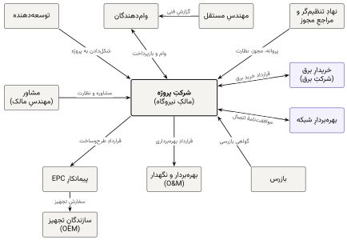
مالک / شرکتِ پروژه (به انگلیسی owner). صاحبِ دارایی و طرفِ همهٔ قراردادها. پاسخگوی نهایی است: اگر نیروگاه آسیب بزند یا تعهدش را انجام ندهد، مالک جواب میدهد. در عمل شرکتی کوچک است که کارش را به دیگران میسپارد، اما تصمیمهای کلیدی و پذیرشِ نهایی با اوست.
توسعهدهنده (به انگلیسی developer). کسی که پروژه را از یک فکر به یک پروندهٔ قابلِ سرمایهگذاری میرساند: زمین را پیدا و قرارداد میکند، داده میگیرد، مجوز میگیرد، با شرکتِ برق مذاکره میکند و پروژه را به سرمایهگذار و وامدهنده عرضه میکند. گاهی خودش بعداً سهامدارِ شرکتِ پروژه میشود و گاهی پروژهٔ آماده را میفروشد.
وامدهندگان (به انگلیسی lenders). بانکها و نهادهای مالی که بخشِ بزرگِ سرمایه را قرض میدهند. حقِ نظارت دارند، شرط میگذارند (مثلاً «تا گزارشِ مهندسِ مستقل نیاید پول آزاد نمیشود») و در بدترین حالت میتوانند پروژه را از مالک بگیرند. نگاهِ وامدهنده همیشه به بدترین سال است، نه به سالِ متوسط (Yescombe 2014).
مهندسِ مستقل / مشاورِ فنیِ وامدهنده (به انگلیسی independent engineer). مهندسی که به نمایندگی از وامدهنده همهٔ مطالعات، طراحیها، قراردادها و پیشرفتِ کار را وارسی میکند. او طراحی نمیکند؛ داوری میکند.
شرکتِ برق / خریدار (به انگلیسی utility, off-taker). طرفی که انرژی را میخرد. در بسیاری از کشورها همان شرکتی است که شبکه را هم دارد؛ در برخی، خریدار و مالکِ شبکه از هم جدا هستند. قراردادِ خریدِ برق، قیمت، مدت، شرایطِ کاهشِ تولید به دستورِ شبکه و جریمهها را تعیین میکند.
بهرهبردارِ شبکه (به انگلیسی grid operator, system operator). نهادی که تعادلِ لحظهایِ تولید و مصرف را نگه میدارد. میگوید نیروگاه در نقطهٔ اتصال چه رفتاری باید داشته باشد (ولتاژ، بسامد، توانِ راکتیو، واکنش به خطا)، چه مطالعاتی لازم است و چه آزمونهایی باید پیش از بهرهبرداری گذرانده شود. فرمانِ کاهشِ تولید از او میآید.
نهادِ تنظیمگر و مراجعِ مجوز (به انگلیسی regulator, permitting authorities). پروانهٔ تولید، تعرفه و قواعدِ بازار از تنظیمگر؛ مجوزِ زمین، ساختوساز، محیطِزیست، هوانوردی، میراثِ فرهنگی و آب از مراجعِ مختلف. هیچکدام طراحی نمیکنند؛ اجازه میدهند یا نمیدهند و شرط میگذارند.
مشاور / مهندسِ مالک (به انگلیسی owner’s engineer). گروهِ مهندسی که بهجای مالک فکر میکند: مشخصاتِ فنی مینویسد، پیشنهادها را ارزیابی میکند، طراحیِ پیمانکار را بازبینی میکند و بر ساخت نظارت دارد. این کتاب بیش از هر نقشِ دیگری خواننده را برای همین نقش آماده میکند: کسی که باید همهچیز را بفهمد و وارسی کند، حتی اگر خودش همهچیز را طراحی نکند.
پیمانکارِ طرحوساخت (به انگلیسی EPC contractor: مهندسی، تدارک، ساخت). یک شرکت که مسئولیتِ طراحیِ تفصیلی، خریدِ تجهیز، ساخت و راهاندازی را یکجا میپذیرد و معمولاً قیمتِ مقطوع و تاریخِ تحویلِ تضمینشده میدهد. مالک بهجای دهها قرارداد، یک طرفِ پاسخگو دارد؛ در عوض پیمانکار برای این ریسک پول میگیرد.
سازندگانِ تجهیز (به انگلیسی original equipment manufacturer، OEM). کارخانههایی که توربین، ماژول، اینورتر، ترانسفورماتور، باتری و کابل را میسازند. گارانتی و منحنیِ عملکردِ تجهیز از آنهاست و بسیاری از آزمونهای پذیرش در کارخانهٔ آنها انجام میشود (فصلهای ۴۰ تا ۴۸).
بهرهبردار و نگهدار (به انگلیسی O&M contractor). گروهی که پس از تحویل، نیروگاه را روزانه میگرداند و نگه میدارد. گاهی بخشی از خودِ مالک است، گاهی شرکتی جدا و گاهی خودِ سازندهٔ توربین.
بازرس (به انگلیسی inspector). شخصِ ثالثِ صلاحیتدار که در کارخانه و در ساختگاه وارسی میکند که آنچه ساخته و نصب شده با مشخصات و مقررات میخواند و گواهی صادر میکند. کارِ بازرس «تماشا کردن» نیست؛ امضایی است که مسئولیت میآورد.
دو بازیگرِ دیگر در شکل نیستند اما همیشه حاضرند: بیمهگر، که ریسکِ ساخت و بهرهبرداری را در برابرِ حقِ بیمه میپذیرد و شرطهای فنیِ خودش را دارد، و جامعهٔ محلی و مالکانِ زمین، که بی رضایت و قراردادِ آنها هیچچیز ساخته نمیشود (فصلِ ۳۳).
جدول 1.1 همین نقشها را با منفعت، ابزارِ قدرت و سندِ اصلیِ هر یک خلاصه میکند. ستونِ منفعت مهم است: وقتی بدانید هر بازیگر از چه میترسد و چه میخواهد، رفتارش را در جلسه و در قرارداد پیشبینی میکنید.
| بازیگر | میخواهد | میترسد از | ابزارِ قدرت | سندِ اصلی |
|---|---|---|---|---|
| مالک | بازدهِ سرمایه در سی سال | توقف، جریمه، حادثه | امضای همهٔ قراردادها | اساسنامه، قراردادها |
| توسعهدهنده | رساندنِ پروژه به تصمیمِ سرمایهگذاری | شکستِ پروژه پس از هزینهٔ توسعه | زمین، مجوز، رابطه | حقِ توسعه، قراردادِ زمین |
| وامدهنده | بازپرداختِ مطمئن | سالِ کمباد و کمآفتاب، نقصِ فنی | شرطِ آزادسازیِ وام | قراردادِ وام، گزارشِ مهندسِ مستقل |
| مهندسِ مستقل | گزارشِ درست و قابلِ دفاع | امضای چیزی که نمیداند | توصیه به وامدهنده | گزارشِ ارزیابیِ فنی |
| شرکتِ برق / خریدار | انرژیِ قابلِ اتکا با قیمتِ توافقی | تحویلِ کم یا بیکیفیت | پرداخت یا جریمه | قراردادِ خریدِ برق |
| بهرهبردارِ شبکه | پایداریِ شبکه | رفتارِ نامناسب در خطا و نوسان | اجازهٔ اتصال، فرمانِ کاهش | موافقتنامهٔ اتصال، آییننامهٔ شبکه |
| تنظیمگر و مراجع | رعایتِ قانون و منافعِ عمومی | زیانِ عمومی، تخلف | مجوز دادن یا ندادن | پروانه، مجوزها |
| مشاور / مهندسِ مالک | طرحِ درست و قابلِ وارسی | رد شدنِ خطا از زیرِ دستش | توصیه، بازبینی، ردِ مدرک | مشخصاتِ فنی، نظرِ بازبینی |
| پیمانکارِ EPC | تحویل در زمان و بودجه | تغییرِ دامنه، تأخیرِ تجهیز | ادعای تغییر | قراردادِ طرحوساخت |
| سازندهٔ تجهیز | فروش و حفظِ اعتبار | ادعای گارانتی | مشخصاتِ محصول | گواهیها، گارانتی، منحنیها |
| بهرهبردار و نگهدار | دسترسپذیریِ بالا با هزینهٔ کم | خرابیِ ناگهانی، نبودِ قطعه | دانشِ روزانهٔ نیروگاه | قراردادِ O&M، دستورالعملها |
| بازرس | انطباقِ قابلِ اثبات | امضای چیزی که دیده نشده | صدور یا ردِ گواهی | گزارشِ بازرسی |
- توسعهدهنده و مالک چه فرقی دارند؟ آیا میتوانند یک شرکت باشند؟
- چرا وامدهنده مهندسِ مستقلِ خودش را میآورد و به مشاورِ مالک اکتفا نمیکند؟
- اگر شرکتِ برق هم خریدار باشد و هم مالکِ شبکه و هم بهرهبردارِ شبکه، کدام تعارضِ منافع پدید میآید؟ این حالت در کشورهای این کتاب چقدر محتمل است؟ (پاسخِ دقیق در فصلهای ۵۵ تا ۵۷؛ اینجا فقط حدس بزنید.)
- کدام بازیگر طراحی نمیکند اما میتواند یک طراحیِ درست را متوقف کند؟
1.2.4 الگوهای مالکیت و قرارداد
بازیگرانِ جدول 1.1 در هر پروژه به یک شکل کنارِ هم قرار نمیگیرند. دو پرسشِ ساختاری شکلِ پروژه را تعیین میکنند: چه کسی مالک است و چگونه درآمد میگیرد؟ و ساخت با چند قرارداد سپرده میشود؟ پاسخ به هر دو، جای ریسکها را جابهجا میکند، و ریسک همان چیزی است که مهندس باید با شواهد کوچکش کند.
الگوهای مالکیت (توصیفهای عمومی؛ شکلِ حقوقیِ هر الگو در هر کشور متفاوت است و در فصلهای ۵۴ تا ۵۷ بررسی میشود):
| الگو | مالک | درآمد از | چه کسی ریسکِ تولید را میبرد | یادداشت |
|---|---|---|---|---|
| تولیدکنندهٔ مستقل با قراردادِ خریدِ برق | شرکتِ پروژهٔ خصوصی | فروشِ انرژی به خریدار طبقِ قرارداد | شرکتِ پروژه (و وامدهنده) | الگوی مبنای نیروگاهِ P |
| مالکیتِ شرکتِ برق | شرکتِ برق یا دولت | تعرفه یا بودجهٔ عمومی | شرکتِ برق | پیمانکار فقط میسازد؛ ساختارِ وام متفاوت است |
| ساخت–بهرهبرداری–انتقال | بخشِ خصوصی برای دورهٔ معین، سپس دولت | قراردادِ بلندمدت | بخشِ خصوصی در دورهٔ قرارداد | پایانِ قرارداد یعنی تحویلِ دارایی با شرایطِ تعریفشده |
| خودمصرفیِ صنعتی | مصرفکنندهٔ بزرگ | صرفهجویی در خرید برق و فروشِ مازاد | مصرفکننده | مثال 1.1 |
الگوهای قرارداد ساخت. در قراردادِ واحدِ طرحوساخت، یک پیمانکار همهچیز را برعهده میگیرد و ریسکِ مرزِ مشترک (اختلاف میانِ تجهیزاتِ سازندگانِ مختلف، هماهنگیِ زمانی، مسئولیتِ عملکردِ کل) با اوست؛ مالک یک طرفِ پاسخگو دارد و برای این آسودگی بیشتر میپردازد. در قراردادهای چندگانه، مالک توربین را از یک سازنده، ماژول و اینورتر را از دیگری، پست را از سومی و کارهای عمرانی را از چهارمی میخرد. هزینهٔ مستقیم کمتر است، اما مرزهای مشترک با مالک میماند: اگر پیِ توربین با فلنجِ برجِ سازنده نخواند، چه کسی پاسخگوست؟ فصلهای ۱۸، ۳۸ و ۳۹ ابزارِ مدیریتِ این مرزها، یعنی سندِ کنترلِ مرزِ مشترک، را میسازند.
مثال 1.4 (یک قرارداد یا چند قرارداد؟) پرسش. مالکِ نیروگاهِ P گروهِ مهندسیِ کوچکی دارد و اولین پروژهاش است؛ وامدهنده هم ترجیح میدهد ریسکِ ساخت با یک پیمانکارِ باتجربه باشد. کدام الگوی قرارداد را پیشنهاد میکنید و چه چیزی را از دست میدهد؟
پاسخ. قراردادِ واحدِ طرحوساخت، یا دستکم دو بسته: بستهٔ توربین (که سازندگانِ توربین معمولاً جدا عرضه میکنند و گارانتیِ عملکردِ ویژهٔ خود را دارد) و بستهٔ بقیهٔ نیروگاه (خورشیدی، باتری، شبکهٔ جمعآوری، پست، عمرانی) با یک پیمانکار. چرا؟ گروهِ کوچکِ مالک نمیتواند دهها مرزِ مشترک را مدیریت کند و وامدهنده هم همین را میخواهد. آنچه از دست میرود: هزینهٔ بیشتر برای انتقالِ ریسک، و کنترلِ کمتر بر انتخابِ تجهیز. شرط: حتی با یک پیمانکار، مرزِ میانِ دو بسته (مثلاً پیِ توربین و کابلهای داخلِ برج) باید در قرارداد صریح نوشته شود. این تصمیم با دلیل و شرطش در دفترِ تصمیم ثبت میشود (D-004).
1.2.5 نقشهٔ ذینفعان
همهٔ کسانی که پروژه بر آنها اثر میگذارد یا بر پروژه اثر میگذارند ذینفع (به انگلیسی stakeholder) هستند، نه فقط طرفهای قرارداد. ابزارِ سادهای برای فکر کردن دربارهٔ آنها نقشهٔ قدرت–علاقه است (شکل 1.2): هر ذینفع را بر پایهٔ اینکه چقدر میتواند بر پروژه اثر بگذارد و چقدر از آن اثر میپذیرد، در یکی از چهار خانه میگذاریم، و هر خانه راهبردِ تعاملِ خودش را دارد.
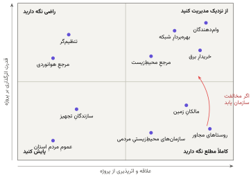
دو هشدار. نخست، این نقشه یک قضاوت است و باید با گفتوگو و شواهد بازبینی شود؛ جای ذینفعان در طولِ پروژه عوض میشود. پیکانِ قرمز نشان میدهد که روستاهای مجاور، که در آغاز «قدرتِ کم و علاقهٔ زیاد» دارند، اگر نگرانیشان نادیده گرفته شود و سازمان یابد، میتوانند به «قدرتِ زیاد» برسند و پروژه را متوقف کنند. دوم، «قدرتِ کم» دلیلِ نادیده گرفتن نیست: حقوقِ مالکانِ زمین و جامعهٔ محلی مستقل از قدرتشان است و الزاماتِ مشارکت، سازوکارِ رسیدگی به شکایت و جبرانِ خسارت را قانون و تعهداتِ پروژه تعیین میکنند (فصلهای ۱۴، ۲۲ و ۳۳).
- در الگوی «ساخت–بهرهبرداری–انتقال» چرا شرایطِ تحویلِ دارایی در پایانِ دوره برای طراحِ نیروگاه مهم است؟
- «ریسکِ مرزِ مشترک» را با یک مثال از نیروگاهِ P توضیح دهید.
- مرجعِ هوانوردی را در کدام خانهٔ نقشهٔ ذینفعان گذاشتهایم و چرا؟
1.2.6 مرزِ آموزشِ مهندسی و مرجعیتِ تأیید
این کتاب بنا دارد خواننده را تا تسلط پیش ببرد: محاسبهٔ پی، تنظیمِ حفاظت، طراحیِ کابل، اندازهگیریِ باد و مدلِ مالی را خودتان انجام خواهید داد. پس لازم است همین ابتدا یک تفاوت را روشن کنیم.
دانستن یعنی بتوانید محاسبه را انجام دهید، نتیجه را تفسیر کنید، خطای دیگران را بیابید و بگویید چه دادهای کم است. مرجعیتِ تأیید یعنی امضای شما زیرِ یک سند، مسئولیتِ قانونی میآورد و دیگران حق دارند بر پایهٔ آن بسازند. مرجعیت از دانستن بهدست نمیآید؛ از پروانهٔ حرفهای، عضویت در نظامِ مهندسی، صلاحیتِ ثبتشده، بیمهٔ مسئولیت و گاهی مجوزِ جداگانهٔ هر پروژه میآید، و قواعدش در هر کشور فرق دارد.
کارهای زیر در این کتاب آموزش داده میشوند تا بفهمید و وارسی کنید، اما انجام یا تأییدِ نهاییِ آنها در یک پروژهٔ واقعی با شخص یا نهادِ صلاحیتدار است:
- طراحیِ سازه و پی (برج، پیِ توربین، سازهٔ نگهدارندهٔ پنل، ساختمانها): مهندسِ سازهٔ دارای پروانه، با بررسیِ مستقل.
- مطالعاتِ ژئوتکنیک و تفسیرِ نتایجِ آن: مهندسِ ژئوتکنیک.
- تنظیمِ حفاظت و هماهنگیِ رلهها در نقطهٔ اتصال: مهندسِ حفاظت، با تأییدِ بهرهبردارِ شبکه.
- مطالعاتِ شبکه (پخشِ بار، اتصالِ کوتاه، پایداری) که به بهرهبردارِ شبکه تحویل میشود: مهندسِ سیستمِ قدرت با مدلِ تأییدشدهٔ شبکه.
- هر کار روی تجهیزِ برقدار یا آزمونِ ولتاژِ بالا: افرادِ آموزشدیده و مجاز، با مجوزِ کار.
- بالابریِ سنگین، کار در ارتفاع، فضای بسته: گروهِ صلاحیتدار با طرحِ تأییدشده.
- طراحیِ سامانهٔ حفاظت در برابرِ حریق و واکنشِ اضطراری: مهندسِ حریق و مرجعِ آتشنشانی.
- ارزیابیِ اثراتِ محیطِزیستی و اجتماعی: مشاورِ دارای صلاحیت، با تأییدِ مرجعِ محیطِزیست.
- طراحیِ تفصیلیِ ماشینِ الکتریکی، ترانسفورماتور، اینورتر و سلولِ باتری: مهندسانِ سازنده با ابزار و آزمونِ کارخانهای.
- امورِ حقوقی، مالیاتی و قراردادی: مشاورِ حقوقی و مالیِ آشنا با همان کشور.
مثال 1.5 (ارزشِ یک محاسبهٔ درست) پرسش. خوانندهای پس از فصلِ ۳۰، پیِ توربینِ شمارهٔ ۷ نیروگاهِ P را با دادههای خاکِ فرضیِ کتاب محاسبه میکند و به قطرِ 20 m و ضخامتِ 3 m میرسد. این محاسبه چه ارزشی دارد و چه ارزشی ندارد؟
پاسخ. ارزش دارد چون خواننده اکنون میداند پی چرا این اندازه است، کدام پارامترِ خاک بیشترین اثر را دارد، و اگر پیمانکار پیِ 16 m پیشنهاد کند باید چه پرسشی بپرسد. همچنین میتواند گزارشِ مهندسِ سازه را بخواند و ناسازگاریِ آن با گزارشِ ژئوتکنیک را ببیند. ارزش ندارد بهعنوانِ نقشهٔ ساخت، چون (۱) دادهٔ خاک فرضی است، نه حاصلِ گمانهزنی در همان نقطه؛ (۲) بارهای طراحی باید از سازندهٔ توربین و برای همان مدل و همان کلاسِ باد بیاید؛ (۳) مسئولیتِ قانونیِ طرح با مهندسِ دارای پروانه است که آن را امضا میکند و بررسیِ مستقل میشود. محاسبهٔ خواننده ابزارِ وارسی است، نه سندِ ساخت. این تفاوت در سراسرِ کتاب برقرار است.
- سه کار نام ببرید که در یک پروژهٔ نیروگاه هم «دانستن» میخواهد و هم «مرجعیت»، و سه کار که فقط دانستن کافی است.
- چرا مرجعیتِ تأیید معمولاً با بیمهٔ مسئولیت همراه است؟
- اگر دو مهندسِ دارای پروانه دربارهٔ اندازهٔ یک پی اختلاف داشته باشند، چه کسی تصمیم میگیرد؟ (به ماتریسِ RACI برگردید.)
1.3 ب. چرخهٔ عمرِ پروژه و دروازههای تصمیم
1.3.1 سیزده مرحله
یک نیروگاهِ تجاری از یک فکر آغاز میشود و سی تا چهل سال بعد با برچیدن و بازگرداندنِ زمین پایان مییابد. شکل 1.3 این مسیر را در سیزده مرحله نشان میدهد. مرحلهها در عمل همپوشانی دارند و گاهی به عقب برمیگردند، اما ترتیبِ منطقیشان همین است.
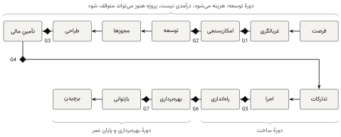
- فرصت (به انگلیسی opportunity). کسی متوجه میشود که در منطقهای باد یا آفتابِ خوب، زمینِ در دسترس، خطِ انتقالِ نزدیک و خریداری برای برق هست. خروجی: یک یادداشتِ چندصفحهای.
- غربالگری (به انگلیسی screening). با دادهٔ عمومی و قواعدِ سرانگشتی، چند ساختگاه مقایسه و موانعِ قطعی (به انگلیسی fatal flaws) شناسایی میشود: زمینِ حفاظتشده، فرودگاهِ نزدیک، نبودِ ظرفیت در شبکه. خروجی: فهرستِ کوتاهِ گزینهها.
- امکانسنجی (به انگلیسی feasibility study). اندازهگیریِ منبع آغاز میشود، طرحِ مفهومی و برآوردِ هزینه و درآمد ساخته میشود و پرسشِ اصلی پاسخ میگیرد: آیا این پروژه میتواند سودآور و مجوزپذیر باشد؟ (فصلِ ۲۲)
- توسعه (به انگلیسی development). قراردادِ زمین، ادامهٔ اندازهگیری تا دستِکم یک سالِ کامل، مطالعاتِ محیطِزیستی و اجتماعی، درخواستِ اتصال به شبکه و مذاکرهٔ قراردادِ خریدِ برق. پرهزینهترین مرحلهٔ پیش از تصمیمِ سرمایهگذاری.
- مجوزها (به انگلیسی permitting). پروانهٔ تولید، مجوزِ محیطِزیست، ساختوساز، هوانوردی، آب و هر مجوزِ دیگری که آن کشور میخواهد (فصلهای ۵۴ تا ۵۷).
- طراحی (به انگلیسی design). از طرحِ مفهومی به طرحِ پایه و سپس مشخصاتی که میتوان بر اساسش مناقصه برگزار کرد: جانمایی، تکخطی، مشخصاتِ تجهیز، مطالعاتِ شبکه.
- تأمینِ مالی (به انگلیسی financing). پرونده به وامدهنده میرود، مهندسِ مستقل همهچیز را وارسی میکند، قراردادِ وام با شرطهایش بسته میشود. پایانِ این مرحله تصمیمِ نهاییِ سرمایهگذاری (به انگلیسی final investment decision، FID) است: از اینجا به بعد پولِ بزرگ خرج میشود.
- تدارکات (به انگلیسی procurement). انتخابِ پیمانکارِ EPC و سازندگانِ اصلی، قراردادها، برنامهٔ ساختِ کارخانهای و بازرسی (فصلهای ۳۹ و ۴۰).
- اجرا (به انگلیسی construction). راه، پی، سازه، نصبِ تجهیز، کابلکشی، پست (فصلِ ۴۹).
- راهاندازی (به انگلیسی commissioning). آزمونِ تکتکِ سامانهها، آزمونهای یکپارچه، آزمونهای موردِ نیازِ بهرهبردارِ شبکه، و تحویلِ رسمی (فصلِ ۵۰). پایانش بهرهبرداریِ تجاری (به انگلیسی commercial operation date) است: از این روز درآمد شروع میشود.
- بهرهبرداری (به انگلیسی operation). بیستوپنج تا سیوپنج سال تولید، نگهداری، گزارشدهی و بهبود (فصلهای ۵۱ و ۵۲).
- بازتوانی (به انگلیسی repowering). تعویضِ تجهیزِ فرسوده با تجهیزِ نو و معمولاً کارآمدتر، با استفاده از زمین، اتصال و مجوزِ موجود؛ ممکن است انجام نشود.
- برچیدن (به انگلیسی decommissioning). جمعآوری، بازیافت، دفعِ ایمنِ پسماند و بازگرداندنِ زمین (فصلِ ۵۳). هزینهٔ آن باید از روزِ اول در حسابها دیده شده باشد.
چند نکته دربارهٔ این شکل. نخست، درآمد فقط در مرحلهٔ یازدهم است؛ ده مرحلهٔ پیش از آن همه هزینهاند. دوم، مراحلِ یک تا هفت برگشتپذیراند: پروژه میتواند متوقف شود و زیان به هزینهٔ توسعه محدود بماند. از مرحلهٔ هشت به بعد توقف بسیار گران است. سوم، مرحلهها از نظرِ زمان بههیچوجه هماندازه نیستند: توسعه و مجوز میتواند سالها طول بکشد، اجرا یکی دو سال، و بهرهبرداری چند دهه.
مثال 1.6 (یک جدولِ زمانیِ فرضی) پرسش. برای نیروگاهِ P یک جدولِ زمانیِ فرضی بسازید و مدتِ هر مرحله را حدس بزنید.
پاسخ. مدتها به کشور، شبکه و بازیگران بستگی دارد؛ عددهای زیر فقط برای حسِ مقیاساند و در فصلِ ۲۲ با منطقِ زمانبندی جایگزین میشوند.
| مرحله | مدتِ فرضی | چرا اینقدر |
|---|---|---|
| فرصت و غربالگری | ۳ تا ۶ ماه | با دادهٔ عمومی و بازدید انجام میشود |
| امکانسنجی | ۶ تا ۱۲ ماه | نصبِ دکلِ باد و آغازِ اندازهگیری |
| توسعه و مجوزها | ۱۸ تا ۳۶ ماه | دستِکم یک سالِ کاملِ اندازهگیری؛ نوبتِ مراجع و شبکه |
| طراحی و تأمینِ مالی | ۹ تا ۱۸ ماه | همزمان با پایانِ توسعه |
| تدارکات و اجرا | ۱۸ تا ۳۰ ماه | زمانِ ساختِ توربین و ترانسفورماتور در کارخانه، فصلِ ساخت |
| راهاندازی | ۳ تا ۶ ماه | آزمونهای بهرهبردارِ شبکه زمانبر است |
| بهرهبرداری | ۲۵ تا ۳۵ سال | عمرِ طراحیِ تجهیز |
جمعِ مراحلِ پیش از بهرهبرداری: حدودِ پنج تا هشت سال. در این مدت هیچ درآمدی نیست و این یکی از دلایلی است که توسعهدهنده و وامدهنده دو بازیگرِ متفاوت با دو نگاهِ متفاوتاند.
- کدام مرحلهها پیش از درآمدند و کدام پس از آن؟ نسبتِ زمانیِ این دو گروه تقریباً چقدر است؟
- چرا «اندازهگیریِ دستِکم یک سالِ کامل» را در مرحلهٔ توسعه گذاشتهایم و نه در غربالگری؟
- بازتوانی با نگهداری چه فرقی دارد؟ آیا بازتوانی به مجوزِ تازه نیاز دارد؟ (حدس بزنید؛ پاسخ در فصلِ ۵۳.)
1.3.2 دروازهها و شواهدِ هر دروازه
میانِ مرحلهها، دروازههای تصمیم (به انگلیسی stage gates) هستند: نقطههایی که کسی با اختیارِ کافی تصمیم میگیرد پروژه ادامه یابد، اصلاح شود یا متوقف شود. دروازه بدونِ شواهدِ مشخص معنا ندارد؛ در هر دروازه باید از پیش روشن باشد چه مدارکی روی میز میآید و چه کسی تصمیم میگیرد. جدول 1.4 هفت دروازهٔ شکلِ پیشین را باز میکند. این جدول یک الگوی آموزشی است؛ شرکتها دروازههای خودشان را دارند، اما منطق یکی است (Project Management Institute 2021).
| دروازه | پرسشِ اصلی | شواهدِ لازم (حداقل) | تصمیمگیرنده |
|---|---|---|---|
| G1 پایانِ غربالگری | آیا مانعِ قطعی دارد؟ ارزشِ هزینهٔ امکانسنجی را دارد؟ | نقشهٔ محدودیتها، برآوردِ منبع از دادهٔ عمومی، فاصله تا شبکه، وضعیتِ زمین | توسعهدهنده |
| G2 پایانِ امکانسنجی | آیا میتواند سودآور و مجوزپذیر باشد؟ | طرحِ مفهومی، نخستین دادهٔ اندازهگیری، برآوردِ انرژی با عدمِ قطعیت، برآوردِ هزینه، نظرِ اولیهٔ شبکه و مراجع | توسعهدهنده و سرمایهگذارِ توسعه |
| G3 آمادگیِ تأمینِ مالی | آیا پرونده برای وامدهنده کامل است؟ | یک سالِ دادهٔ اندازهگیری، مطالعهٔ انرژیِ مستقل، مجوزهای اصلی، موافقتنامهٔ اتصال، پیشنویسِ قراردادِ خرید، طرحِ پایه | مالک |
| G4 تصمیمِ نهاییِ سرمایهگذاری | پول خرج شود؟ | همهٔ قراردادهای اصلی امضاشده، گزارشِ مهندسِ مستقل، تأییدِ وام | هیئتمدیرهٔ مالک و وامدهنده |
| G5 آمادگیِ راهاندازی | ساخت کامل و ایمن است؟ | گواهیهای تکمیلِ مکانیکی، بازرسیها، مدارکِ چونساخت | مالک، با بازرس |
| G6 بهرهبرداریِ تجاری | شبکه و خریدار میپذیرند؟ | آزمونهای قبولی، تأییدِ بهرهبردارِ شبکه، گواهیِ عملکرد | بهرهبردارِ شبکه و خریدار |
| G7 پایانِ عمر | بازتوانی، ادامه یا برچیدن؟ | وضعیتِ تجهیز، اقتصادِ هر گزینه، تعهداتِ زمین و محیطِزیست | مالک، با مراجع |
دو خاصیتِ دروازهٔ خوب: متوقف کردن در آن ارزانتر از ادامه دادن است، و تصمیم ثبت میشود (چه کسی، بر پایهٔ چه مدرکی، با چه شرطی). به این ثبت میگوییم دفترِ تصمیم (به انگلیسی decision log) و از همین فصل آن را برای نیروگاهِ P آغاز میکنیم.
مثال 1.7 (آیا از دروازهٔ دوم میگذرد؟) پرسش. توسعهدهندهٔ نیروگاهِ P در پایانِ امکانسنجی اینها را دارد: دادهٔ بادِ یکساله از یک مدلِ ماهوارهای و جوّی (نه از دکلِ ساختگاه)، دادهٔ تابشِ همان مدل، طرحِ مفهومی، برآوردِ انرژیِ 290 GWh در سال، نامهای از شرکتِ برق که «بررسیِ درخواستِ اتصال آغاز شده»، و توافقِ شفاهی با مالکانِ زمین. آیا از G2 میگذرد؟
پاسخ. به جدول برمیگردیم. طرحِ مفهومی: دارد. برآوردِ انرژی: دارد، اما عدمِ قطعیتِ آن بیان نشده و منبعش مدل است، نه اندازهگیری؛ برای G2 «نخستین دادهٔ اندازهگیری» خواسته شده بود، پس دستِکم باید دکلِ باد نصب شده و چند ماه داده داشته باشد. نظرِ اولیهٔ شبکه: نامهٔ «بررسی آغاز شده» نظر نیست؛ باید دستِکم بگوید در آن نقطه ظرفیتِ 100 MW محتمل است یا نه. زمین: توافقِ شفاهی هیچ ارزشِ حقوقی ندارد؛ باید دستِکم یک پیشقرارداد یا حقِ تقدم باشد.
تصمیمِ درست: گذر با شرط (به انگلیسی conditional pass) یا بازگشت. شرطها: نصبِ دکل و سه ماه دادهٔ همزمان با مدل، نامهٔ ظرفیت از شبکه، پیشقراردادِ زمین. این تصمیم با شرطهایش در دفترِ تصمیم ثبت میشود. نکتهٔ مهم: برآوردِ 290 GWh بهخودیِخود نادرست نیست؛ بیسند است و دروازه دقیقاً برای جدا کردنِ این دو ساخته شده است.
- چرا تصمیمگیرندهٔ G6 مالک نیست؟
- اگر در G4 یکی از قراردادهای اصلی (مثلاً قراردادِ خریدِ برق) امضا نشده باشد، چه خطری دارد که پول خرج شود؟
- «گذر با شرط» چه زمانی درست است و چه زمانی بهانهای برای ندیدنِ مشکل؟
1.3.3 منحنیِ اثرگذاری و هزینه
چرا دروازههای اول اینقدر مهماند؟ شکل 1.4 دو منحنی را کنارِ هم میگذارد. منحنیِ آبی توانِ اثرگذاری بر هزینه و عملکردِ نهایی است: در غربالگری، با عوض کردنِ ساختگاه، فناوری یا اندازهٔ نیروگاه میتوان همهچیز را تغییر داد؛ در اجرا، تقریباً هیچچیز را نمیتوان بی هزینهٔ سنگین تغییر داد. منحنیِ قرمز هزینهٔ انباشتهٔ انجامشده است: تا پیش از تصمیمِ نهاییِ سرمایهگذاری چند درصدِ کلِ هزینه خرج شده و پس از آن، باقی. شکل هیچ عددی روی محور ندارد؛ شکلِ دو منحنی پیام است.
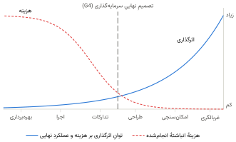
نتیجهٔ عملی برای مهندس: بیشترین ارزشِ کارِ مهندسی در مراحلِ اول خلق میشود، وقتی داده کم است و عدمِ قطعیت زیاد. این یعنی مهندسِ خوب باید بتواند با دادهٔ ناقص برآوردِ درست و با عدمِ قطعیتِ بیانشده بدهد، نه اینکه منتظرِ دادهٔ کامل بماند. فصلهای ۲ و ۱۶ همین مهارت را میسازند.
مثال 1.8 (یک تغییر، سه زمان) پرسش. معلوم میشود محلِ پیشبینیشده برای پستِ خروجیِ نیروگاهِ P روی زمینی است که در فصلِ بارندگی آب میگیرد و باید 400 m جابهجا شود. هزینهٔ این تغییر را در سه زمان مقایسه کنید: در غربالگری، در طراحیِ پایه، و پس از آغازِ اجرا.
پاسخ. در غربالگری، تغییر یعنی جابهجا کردنِ یک مستطیل روی نقشه: چند ساعت کار. در طراحیِ پایه، جانمایی، مسیرِ کابلهای جمعآوری، طولِ خطِ خروجی، مطالعهٔ ژئوتکنیکِ آن نقطه و بخشی از مجوزِ ساخت باید بازنگری شود: چند هفته کار و شاید چند درصدِ هزینهٔ طراحی. پس از آغازِ اجرا، اگر پی ریخته شده باشد، باید تخریب شود، کابلهای کشیدهشده بلند شوند، قراردادِ پیمانکار ادعای تغییر بگیرد و برنامهٔ زمانی عقب بیفتد؛ هزینه میتواند صدها برابرِ حالتِ اول باشد و تاریخِ بهرهبرداری را جابهجا کند، که خودش جریمه و تأخیرِ درآمد است.
قاعدهٔ سرانگشتیِ رایج میگوید هزینهٔ یک تغییر در هر مرحله تقریباً ده برابرِ مرحلهٔ پیش است («قاعدهٔ ده»). این قاعده قانونِ فیزیک نیست و عددش از پروژهای به پروژهای فرق دارد، اما جهتش همیشه درست است. درسِ آن برای فصلِ ۲۹: بررسیِ سیلاب و زهکشی در شناساییِ ساختگاه است، نه در اجرا.
- چرا منحنیِ هزینه درست پیش از تصمیمِ نهاییِ سرمایهگذاری تند بالا میرود؟
- در کدام مرحله «نه گفتن» ارزانترین است؟ چرا با این حال پروژهها اغلب دیر متوقف میشوند؟
- یک تغییرِ دیگر مثال بزنید که در غربالگری رایگان و در اجرا بسیار گران باشد.
1.3.4 سنجههای غربالگری و منابعِ لازم
در دروازههای اول، تصمیم با چند سنجهٔ ساده گرفته میشود که هر کسی باید بتواند با دست حساب کند. در اینجا آنها را تعریف میکنیم و برای نیروگاهِ P بهکار میبریم. هر کدام در فصلی از کتاب بهدقت ساخته میشود؛ اینجا نسخهٔ «پشتِ پاکت» است.
توان و انرژی. توان (به انگلیسی power) آهنگِ تولید یا مصرفِ انرژی است و یکای آن وات (W) و مضربهایش: کیلووات (kW، هزار وات)، مگاوات (MW، میلیون وات). انرژی (به انگلیسی energy) حاصلِ توان در زمان است؛ در صنعتِ برق یکای آن واتساعت و مضربهایش است: مگاواتساعت (MWh)، گیگاواتساعت (GWh، هزار مگاواتساعت). اگر توانِ \(P\) به مدتِ \(t\) ثابت بماند:
\[ E = P\,t \tag{1.1}\]
یک نیروگاه با توانِ ثابتِ 1 MW در یک ساعت 1 MWh و در یک سالِ غیرِکبیسه (\(365\times 24 = 8760\) ساعت) 8760 MWh تولید میکند. ولی هیچ نیروگاهِ بادی یا خورشیدی با توانِ ثابت کار نمیکند؛ پس به سنجهٔ بعدی نیاز داریم.
ضریبِ ظرفیت (به انگلیسی capacity factor، CF). نسبتِ انرژیِ واقعاً تولیدشده در یک دوره به انرژیای که اگر نیروگاه در تمامِ آن دوره با توانِ نامیِ \(P_\text{n}\) کار میکرد تولید میشد:
\[ \text{CF} = \frac{E}{P_\text{n}\,t} \tag{1.2}\]
ضریبِ ظرفیت عددی میانِ صفر و یک (یا صفر تا صد درصد) است. از آن میتوان برعکس هم استفاده کرد: اگر ضریبِ ظرفیتِ یک منطقه را بدانیم، انرژیِ سالانه را از \(E = \text{CF}\cdot P_\text{n}\cdot 8760\) برآورد میکنیم. هشدار: ضریبِ ظرفیت یک نتیجه است، نه یک ورودی؛ در غربالگری آن را از تجربهٔ پروژههای مشابه حدس میزنیم و در فصلِ ۱۵ از داده و مدل محاسبه میکنیم.
مثال 1.9 (انرژیِ سالانهٔ نیروگاهِ P با دست) پرسش. با فرضِ ضریبِ ظرفیتِ 20 % برای بخشِ خورشیدی (نسبت به توانِ 50 MW اینورترها) و 35 % برای بخشِ بادی (60 MW)، انرژیِ سالانهٔ هر بخش را برآورد کنید. این دو ضریب فرضهای غربالگریاند.
پاسخ. از معادلهٔ 1.2:
\[ E_\text{PV} = 0.20 \times 50\ \text{MW} \times 8760\ \text{h} = 87\,600\ \text{MWh} \approx 88\ \text{GWh} \]
\[ E_\text{W} = 0.35 \times 60\ \text{MW} \times 8760\ \text{h} = 183\,960\ \text{MWh} \approx 184\ \text{GWh} \]
مجموع حدودِ 272 GWh در سال. وارسیِ معقول بودن: بخشِ بادی با توانِ نامیِ کمی بیشتر، دو برابرِ بخشِ خورشیدی انرژی میدهد، چون باد شبها هم میوزد اما خورشید نیمی از شبانهروز غایب است؛ ضریبِ ظرفیتِ خورشیدی بهندرت از حدودِ 25 % و بادیِ خشکی بهندرت از حدودِ 50 % فراتر میرود، پس هر دو عدد در محدودهٔ باورپذیرند. وضعیتِ داده: هر دو ضریب فرضی؛ بنابراین نتیجه هم فرضی است و باید برچسبش را نگه دارد.
نسبتِ DC/AC. آرایهٔ خورشیدی توانِ جریانِ مستقیم (DC) تولید میکند و اینورترها آن را به جریانِ متناوب (AC) تبدیل میکنند. توانِ نامیِ آرایه را در شرایطِ استانداردِ آزمون با واتپیک (Wp) بیان میکنند؛ توانِ اینورترها را با وات. نسبتِ این دو در نیروگاهِ P برابرِ \(60/50 = 1.2\) است. چرا آرایه بزرگتر از اینورتر است؟ چون آرایه فقط در ظهرِ روزهای صافِ خنک به توانِ نامی نزدیک میشود؛ در بقیهٔ ساعتها اینورترِ کوچکتر خالی میماند. آرایهٔ بزرگتر اینورتر را در ساعتهای بیشتری پُر نگه میدارد، به قیمتِ آنکه در چند ساعتِ اوج، توانِ اضافه بریده شود (به انگلیسی clipping). فصلِ ۱۰ این توازن را دقیق حساب میکند.
سقفِ توانِ تحویلی و بُرش. شبکه در نقطهٔ اتصال بیش از 100 MW نمیپذیرد، در حالی که جمعِ توانِ نامیِ اینورترها و توربینها 110 MW است. در ساعتهایی که هر دو منبع نزدیکِ اوج باشند، مازاد باید کاهش یابد (به انگلیسی curtailment). پرسشِ غربالگری: چنین ساعتهایی چقدر پیش میآید و چقدر انرژی از دست میرود؟ پاسخِ آن به همزمانیِ باد و آفتاب بستگی دارد و با دست نمیشود حساب کرد؛ به دادهٔ ساعتی و کد نیاز دارد (بخشِ پ).
زمین. آرایهٔ خورشیدیِ زمینی بسته به عرضِ جغرافیایی، فاصلهٔ ردیفها و شیبِ زمین معمولاً حدودِ 1.5 تا 2.5 ha به ازای هر مگاواتپیک میگیرد (هکتار، ha، دههزار مترِ مربع). توربینهای بادی باید از هم فاصله داشته باشند تا در «سایهٔ بادیِ» هم نیفتند؛ قاعدهٔ سرانگشتی پنج تا نُه قطرِ روتور در جهتِ بادِ غالب و سه تا پنج قطر عمود بر آن است. این فاصلهها یک پوشش (به انگلیسی envelope) تعریف میکنند که بسیار بزرگتر از زمینی است که واقعاً اشغال میشود؛ میانِ توربینها کشاورزی ادامه دارد.
مثال 1.10 (زمینِ نیروگاهِ P) پرسش. زمینِ لازم برای بخشِ خورشیدی و پوششِ بخشِ بادیِ نیروگاهِ P را برآورد کنید. قطرِ روتورِ توربینِ فرضی 150 m است.
پاسخ. خورشیدی، با 1.8 ha/MWp بهعنوانِ مقدارِ میانی:
\[ A_\text{PV} = 60\ \text{MWp} \times 1.8\ \text{ha/MWp} = 108\ \text{ha} \]
با دو سرِ بازه، 90 تا 150 ha. بادی، با فاصلهٔ هفت قطر در جهتِ باد و چهار قطر عمود بر آن، سهمِ هر توربین یک مستطیلِ \(7D \times 4D\) است:
\[ A_\text{W} = 12 \times (7 \times 150\ \text{m}) \times (4 \times 150\ \text{m}) = 12 \times 1050\ \text{m} \times 600\ \text{m} = 7.56\ \text{km}^2 = 756\ \text{ha} \]
وارسی: پوششِ بادی هفت برابرِ زمینِ خورشیدی است، اما زمینِ واقعاً اشغالشدهٔ هر توربین (سکو، جاده، پی) معمولاً کمتر از یک هکتار است، یعنی زیرِ ده هکتار برای دوازده توربین. پس نوعِ قراردادِ زمین برای دو بخش فرق میکند: خریدِ یا اجارهٔ کاملِ زمینِ خورشیدی، در برابرِ حقِ ارتفاق و اجارهٔ نقطهای برای توربینها. وضعیت: هر دو ضریب قاعدهٔ سرانگشتیاند؛ فصلِ ۱۴ آنها را با جانماییِ واقعی جایگزین میکند.
منابعِ لازم در هر دروازه. غیر از سنجههای فنی، در هر دروازه باید بدانیم رسیدن به دروازهٔ بعد چقدر پول، آدم و زمان میخواهد. هزینهٔ توسعه (همهٔ هزینهها تا تصمیمِ نهاییِ سرمایهگذاری) معمولاً چند درصدِ هزینهٔ سرمایهایِ کلِ پروژه است و این چند درصد پولِ در خطر است: اگر پروژه در G3 بمیرد، برنمیگردد.
مثال 1.11 (بودجهٔ توسعه) پرسش. فرض کنید هزینهٔ سرمایهایِ کلِ نیروگاهِ P، به یک واحدِ پولیِ فرضی، 120 میلیون واحد برآورد شده است (این عدد صرفاً برای تمرینِ حساب است و هیچ ادعایی دربارهٔ قیمتِ واقعی ندارد؛ فصلِ ۲۱ به هزینهها میپردازد). اگر هزینهٔ توسعه 3 % از آن باشد، چقدر است و تا کدام دروازه خرج میشود؟
پاسخ. \(0.03 \times 120 = 3.6\) میلیون واحد. این مبلغ تا G4 خرج میشود و بیشترِ آن در مرحلههای توسعه و مجوز (اندازهگیری، مطالعات، مشاوران، هزینههای زمین و درخواستِ اتصال). با 2 % و 5 %، بهترتیب 2.4 و 6.0 میلیون واحد. نکتهٔ مدیریتی: هر دروازه باید بودجهٔ رسیدن به دروازهٔ بعد را تصویب کند، نه کلِ بودجهٔ توسعه را؛ به این ترتیب پولِ در خطر در هر لحظه کمینه میماند.
این سنجهها همه در کدِ همراهِ کتاب هم پیاده شدهاند. تابعِ زیر از بستهٔ plantp ضریبِ ظرفیت را حساب میکند؛ به ورودیهای غیرِمجاز هم توجه کنید، که در فصلِ ۵ به آن برمیگردیم:
def capacity_factor(energy_mwh: float, rated_mw: float,
hours: float = 8760.0) -> float:
"""Energy actually produced divided by the energy at rated power all the time."""
if rated_mw <= 0 or hours <= 0:
raise ValueError("rated power and hours must be positive")
return energy_mwh / (rated_mw * hours)- نیروگاهی 30 MW در یک سال 65.7 GWh تولید کرده است. ضریبِ ظرفیتش چقدر است؟
- چرا ضریبِ ظرفیتِ بخشِ خورشیدی را نسبت به توانِ اینورترها (50 MW) تعریف کردیم و نه نسبت به توانِ آرایه (60 MWp)؟ هر دو تعریف چه عددی میدهند؟
- اگر نسبتِ DC/AC را به 1.4 برسانیم، چه چیزی بهتر و چه چیزی بدتر میشود؟
- «پوششِ» مزرعهٔ بادی با «زمینِ اشغالشده» چه فرقی دارد و این فرق چه پیامدی برای قراردادِ زمین دارد؟
1.3.5 زمانبندیِ توسعه و مسیرِ بحرانی
مثال 1.6 مدتِ مرحلهها را حدس زد. اما مرحلههای توسعه پشتِ سرِ هم نیستند؛ بسیاری همزمان پیش میروند و هر کدام به برخی دیگر وابسته است. روشِ مسیرِ بحرانی (به انگلیسی critical path method) سادهترین ابزارِ فهمِ این شبکه است.
روش. برای هر فعالیت مدت و پیشنیازهایش را مینویسیم. (۱) گذرِ پیشرو: زودترین شروعِ هر فعالیت برابرِ دیرترین پایانِ پیشنیازهایش است و زودترین پایان، شروع به اضافهٔ مدت. پایانِ آخرین فعالیت، مدتِ کلِ پروژه است. (۲) گذرِ پسرو: از پایان برمیگردیم؛ دیرترین پایانِ هر فعالیت برابرِ کوچکترین «دیرترین شروع» در میانِ فعالیتهایی است که پس از آن میآیند. (۳) شناوری هر فعالیت، دیرترین شروع منهای زودترین شروع است: چقدر میتواند عقب بیفتد بی آنکه پروژه عقب بیفتد. فعالیتهای با شناوریِ صفر مسیرِ بحرانی را میسازند.
مثال 1.12 (مسیرِ بحرانیِ توسعهٔ نیروگاهِ P) پرسش. نُه فعالیتِ توسعهٔ نیروگاهِ P با مدتهای فرضی (ماه) و پیشنیازها چنیناند: A غربالگری (۳)؛ B دکلِ باد و یک سال اندازهگیری (۱۴، پس از A)؛ C درخواست و مطالعهٔ اتصال (۱۲، پس از A)؛ D قراردادهای زمین (۸، پس از A)؛ E ارزیابیِ اثراتِ محیطی و اجتماعی (۱۲، پس از A)؛ F مجوزها (۶، پس از D و E)؛ G مطالعهٔ تولیدِ انرژی (۲، پس از B)؛ H مذاکرهٔ قراردادِ خریدِ برق (۶، پس از G و C)؛ I تأمینِ مالی تا تصمیمِ نهایی (۴، پس از F و H). مدتِ کل، مسیرِ بحرانی و شناوریِ هر فعالیت را بیابید.
پاسخِ دستی، گذرِ پیشرو. A: ۰ تا ۳. B، C، D و E همه از ۳ شروع میشوند و به ترتیب در ۱۷، ۱۵، ۱۱ و ۱۵ تمام. F منتظرِ دیرترینِ D و E است: از ۱۵ تا ۲۱. G: ۱۷ تا ۱۹. H منتظرِ G (۱۹) و C (۱۵): از ۱۹ تا ۲۵. I منتظرِ F (۲۱) و H (۲۵): از ۲۵ تا ۲۹. گذرِ پسرو: I باید در ۲۹ تمام شود، پس دیرترین شروعش ۲۵؛ H و F باید تا ۲۵ تمام شوند؛ F دیرترین شروعش ۱۹، پس D و E باید تا ۱۹ تمام شوند. و همینطور.
act dur ES EF LS LF float
A 3 0 3 0 3 0
B 14 3 17 3 17 0
C 12 3 15 7 19 4
D 8 3 11 11 19 8
E 12 3 15 7 19 4
F 6 15 21 19 25 4
G 2 17 19 17 19 0
H 6 19 25 19 25 0
I 4 25 29 25 29 0
project duration 29 months; critical path A - B - G - H - Iتفسیر. مسیرِ بحرانی A–B–G–H–I است: اندازهگیریِ یکسالهٔ باد، نه مجوزها و نه شبکه، مدتِ توسعه را تعیین میکند. پیامدِ مدیریتی: دکلِ باد باید هرچه زودتر نصب شود؛ هر ماه تأخیر در آن یک ماه تأخیر در کلِ پروژه است، اما قراردادهای زمین (D) هشت ماه شناوری دارند. هشدار: این نتیجه به عددهای فرضی وابسته است؛ اگر مطالعهٔ اتصال (C) در واقع ۱۸ ماه طول بکشد، مسیرِ بحرانی عوض میشود. در فصلهای ۲۲ و ۳۸ زمانبندی با عدمِ قطعیتِ مدتها و منابع کامل میشود.
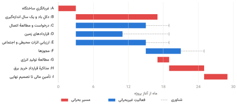
1.3.6 منحنیِ هزینهٔ انباشته
شکل 1.4 نشان داد هزینه کِی خرج میشود؛ شکل 1.6 همان را با یک پروفیلِ عددیِ فرضی نشان میدهد: حدودِ سه درصدِ سرمایه در سی ماهِ توسعه، و نود و هفت درصد در بیستوشش ماهِ تدارکات و اجرا. شکلِ «S» از اینجا میآید که در آغاز و پایانِ هر مرحله فعالیت کم و در میانه زیاد است.
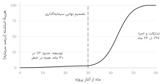
fictional spend profile: 3 % of capital over months 0-30 (development),
97 % over months 30-56 (procurement and construction)
spent by month 24: 2.7 %; by month 30: 3.0 %; by month 43: 51.5 %این منحنی سه کاربرد دارد که در فصلهای بعد میبینیم: برنامهریزیِ نقدینگی (کِی وام آزاد شود؛ فصلِ ۲۱)، کنترلِ پروژه (مقایسهٔ هزینهٔ واقعی با برنامه؛ فصلِ ۴۹)، و سنجشِ ریسکِ توسعه: تا ماهِ سی، فقط سه درصدِ سرمایه خرج شده، و همهٔ آن «پولِ در خطر» است.
1.3.7 نخستین نگاه به ریسک
ریسک (به انگلیسی risk) رویدادی نامطمئن است که اگر رخ دهد بر هدفهای پروژه اثر میگذارد. سادهترین ابزارِ مقایسهٔ ریسکها ماتریسِ احتمال–اثر است: احتمال و اثرِ هر ریسک را روی مقیاسِ یک تا پنج قضاوت میکنیم و حاصلضرب را «امتیاز» مینامیم (شکل 1.7). مرزِ دستهها (اینجا ۱۵ و ۸) قراردادی است که خودِ پروژه میگذارد، نه یک استاندارد.
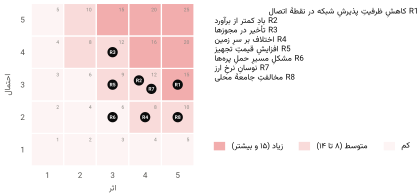
R1: L3 x I5 = 15 (high)
R2: L3 x I4 = 12 (medium)
R3: L4 x I3 = 12 (medium)
R4: L2 x I4 = 8 (medium)
R5: L3 x I3 = 9 (medium)
R6: L2 x I3 = 6 (low)
R7: L3 x I4 = 12 (medium)
R8: L2 x I5 = 10 (medium)مثال 1.13 (از امتیاز تا اقدام) پرسش. بالاترین ریسکِ ماتریس (R1، کاهشِ ظرفیتِ پذیرشِ شبکه) را بردارید و برای آن یک اقدامِ کاهش و یک شاهد پیشنهاد کنید که نشان دهد ریسک کم شده است.
پاسخ. اقدام: پیش از نصبِ دکل و هزینهٔ بزرگِ توسعه، درخواستِ رسمیِ اتصال و پیشمطالعهٔ ظرفیت از بهرهبردارِ شبکه (فعالیتِ C را زودتر و با اولویت آغاز کنید). شاهد: نامهٔ رسمیِ ظرفیتِ قابلِ اتصال در آن نقطه یا نتیجهٔ مطالعهٔ اتصال؛ پس از دریافتِ آن، احتمالِ R1 از ۳ به ۱ یا ۲ کاهش مییابد و ریسک به دستهٔ «متوسط» یا «کم» میرود. اگر ظرفیت کمتر از 100 MW باشد، ریسک به واقعیت تبدیل شده و باید تصمیم گرفت (تمرین 1.35). قاعدهٔ کلی: اقدامی که شاهد تولید نمیکند، ریسک را کم نکرده است. ابزارِ کاملِ مدیریتِ ریسک در فصلهای ۲۲، ۳۲ و ۳۸ میآید.
- چرا فعالیتِ D (قراردادهای زمین) با اینکه مهم است، شناوریِ هشتماهه دارد؟ این شناوری چه خطری دارد؟
- اگر مدتِ B از ۱۴ به ۱۱ ماه کاهش یابد (مثلاً با پذیرشِ دادهٔ کوتاهتر)، مدتِ کل چه میشود؟ چه بهایی دارد؟
- چرا ضرب کردنِ احتمال در اثر برای ریسکهایی با اثرِ فاجعهبار و احتمالِ بسیار کم گمراهکننده است؟
1.4 پ. نیروگاهِ P: مرز، فرضها و شواهد
1.4.1 دامنهٔ مرجع
نیروگاهِ P یک نیروگاهِ خیالی است که فقط برای آموزش ساخته شده. هیچ ساختگاه، شبکه یا محصولِ واقعی را توصیف نمیکند و عددهایش توصیه نیستند. دامنهٔ مرجعِ آن چنین است:
- روی خشکی، متصل به شبکه، با آرایهٔ خورشیدیِ زمینی در مقیاسِ نیروگاهی و توربینهای بادیِ خشکی.
- یک ذخیرهسازِ باتریای که پیکربندیپذیر است: دو سناریوی نامدار داریم، S0 بدونِ باتری و S1 با باتری، و هر تمرینی که به باتری میپردازد باید بگوید کدام سناریو، با چه نقش و چه فرضهایی.
- شبکهٔ جمعآوریِ فشارِ متوسط، پستِ خروجی و داراییهای صادراتِ توان در مالکیتِ پروژه، و یک نقطهٔ اتصالِ تعریفشده با شبکه؛ کارهایی که شرکتِ برق میسازد و مالک میشود، مرزِ بیرونیاند، نه بخشی از پروژه.
- خدماتِ کمکی و مشترکِ نیروگاه: تغذیهٔ داخلی، توزیعِ فشارِ ضعیفِ AC و DC، برقِ اضطراریِ کنترل، تهویه، روشنایی، پمپها و آب.
- آشکارسازی و اعلامِ حریق و رابطهای اطفا بر پایهٔ ارزیابیِ خطرِ تأییدشده.
- کنترلگرِ نیروگاه، اسکادا، ارتباطات، اتاقِ کنترل و گروهِ بهرهبرداری.
بیرون از دامنهٔ مرجع: بادِ فراساحلی، خورشیدیِ شناور و تولیدِ هیدروژن. اینها فقط در حاشیههای مشخصاً برچسبخورده بهعنوانِ مقایسهٔ اختیاری میآیند، چون هر کدام طراحی، لجستیک، مجوز، ایمنی و بهرهبرداریِ متفاوتی دارد.
جدول 1.5 عددهای بذریِ نیروگاهِ P را میدهد. ستونِ «وضعیت» از همین نخستین جدولِ کتاب همراهِ هر عدد است و تا پایانِ کتاب رها نمیشود.
| شناسه | کمیت | مقدار | یکا | وضعیت |
|---|---|---|---|---|
| SR-01 | توانِ آرایهٔ خورشیدی (DC) | 60 | MWp | فرضی |
| SR-02 | توانِ اینورترهای خورشیدی (AC) | 50 | MW | فرضی |
| SR-03 | توانِ بادی (AC) | 60 | MW | فرضی |
| SR-04 | ولتاژِ نامیِ شبکهٔ جمعآوری | 33 | kV | فرضی |
| SR-05 | ولتاژِ نامیِ نقطهٔ اتصال | 132 | kV | فرضی |
| SR-06 | سقفِ توانِ تحویلی در نقطهٔ اتصال | 100 | MW | فرضی |
| SR-07 | توانِ باتری (سناریوی S1) | 20 | MW | فرضی |
| SR-08 | انرژیِ نامیِ باتری در آغازِ عمر (سناریوی S1) | 40 | MWh | فرضی |
نکتهای دربارهٔ عددها: جمعِ توانِ اینورترها و توربینها 110 MW است اما سقفِ تحویل 100 MW؛ این عمدی است و در بخشِ مثالِ کاربردی میبینیم چرا کسی ممکن است آگاهانه چنین کند.
1.4.2 جریانِ انرژی و مرزِ مالکیت
شکل 1.8 راهِ انرژی را از منبع تا شبکه نشان میدهد. از چپ به راست (قراردادِ نقشههای فنی در سراسرِ جهان این است که منبع در چپ و شبکه در راست باشد؛ متنِ فارسیِ کتاب این قرارداد را عوض نمیکند): آرایهٔ خورشیدی توانِ DC تولید میکند و اینورترها آن را به AC تبدیل میکنند؛ هر توربین مبدل و ترانسفورماتورِ خودش را دارد؛ باتری از راهِ یک مبدلِ دوسویه هم میگیرد و هم میدهد. همه به شینهٔ جمعآوریِ 33 kV میرسند (به انگلیسی collector bus؛ شینه یعنی هادیِ مشترکی که چند مدار به آن وصل میشوند). از شینه، ترانسفورماتورِ اصلی ولتاژ را به 132 kV بالا میبرد تا در خطِ خروجی تلفات کم باشد، و در نقطهٔ اتصال کنتورِ فروش و مرزِ شبکه است. مصرفِ داخلی از همان شینه تغذیه میشود و کنترلگرِ نیروگاه با خطچین به همهجا وصل است: اطلاعات میگیرد و فرمان میدهد، اما انرژی نمیبرد.
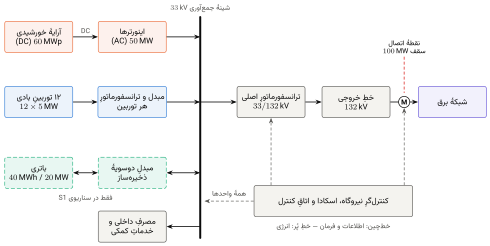
این شکل بلوکی است: هر بلوک دهها تجهیز را نمایندگی میکند و هیچچیز دربارهٔ تعدادِ مدارها، حفاظت یا سیمکشی نمیگوید. نمودارِ تکخطی (فصلِ ۲۳)، نقشهٔ حفاظت (فصلِ ۲۶) و نقشهٔ شبکهٔ ارتباطی (فصلِ ۳۵) هر یک لایهٔ دیگری از همین نیروگاه را نشان میدهند. یکی از مهارتهای این کتاب این است که بدانید هر نقشه چه میگوید و چه نمیگوید.
شکل 1.9 پرسشِ دیگری را پاسخ میدهد: مالِ کیست و مسئولیتِ کیست؟ هر دارایی از بلوکِ خورشیدی تا پستِ خروجیِ نیروگاه در مالکیت و مسئولیتِ پروژه است. در نقطهٔ اتصال، کنتورِ فروش و یک نقطهٔ جداسازی (کلیدی که میتواند نیروگاه را از شبکه جدا کند) قرار دارد و از آنسو شبکه مالِ شرکتِ برق است. اما یک دارایی با خطچین کشیده شده: خطِ خروجیِ 132 kV. اینکه خطِ خروجی و فیدرِ ورودی در پستِ شبکه را چه کسی میسازد، چه کسی مالک میشود و چه کسی نگه میدارد، در کشورها و پروژههای مختلف فرق دارد و در موافقتنامهٔ اتصال نوشته میشود. در خطِ مبنای نیروگاهِ P فرض کردهایم که پروژه آن را میسازد و مالک میشود، و این فرض را با برچسبِ «فرض» در شکل و در دفترِ فرضها نگه داشتهایم.
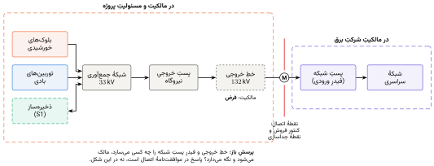
چرا مرز اینقدر مهم است؟ چون در مرز سه چیز عوض میشود: چه کسی پول میدهد، چه کسی طراحی و قواعد را تعیین میکند، و چه کسی هنگامِ خطا پاسخگوست. اگر خطِ خروجی مالِ پروژه باشد، پروژه آن را میسازد، بیمه میکند، نگه میدارد و اگر قطع شود درآمدش را از دست میدهد؛ اگر مالِ شرکتِ برق باشد، معمولاً پروژه بخشی از هزینه را میدهد اما مسئولیتِ نگهداری ندارد. همین یک فرض میتواند هزینهٔ سرمایهای، برنامهٔ زمانی و مدلِ مالی را جابهجا کند. جدول 1.6 مرز را دارایی به دارایی مینویسد.
| دارایی | میسازد | مالک میشود | نگه میدارد | وضعیتِ این مرز |
|---|---|---|---|---|
| بلوکهای خورشیدی و اینورترها | پروژه (EPC) | پروژه | پروژه (O&M) | فرضِ مبنا |
| توربینها و مبدلهایشان | پروژه (EPC و سازنده) | پروژه | پروژه (اغلب سازنده) | فرضِ مبنا |
| باتری و مبدلش (S1) | پروژه | پروژه | پروژه | فرضِ مبنا |
| شبکهٔ جمعآوری 33 kV | پروژه | پروژه | پروژه | فرضِ مبنا |
| پستِ خروجی 33/132 kV | پروژه | پروژه | پروژه | فرضِ مبنا |
| خطِ خروجی 132 kV | پروژه؟ | پروژه؟ | پروژه؟ | فرض، باز |
| فیدر و تجهیزِ ورودی در پستِ شبکه | شرکتِ برق؟ (با هزینهٔ پروژه؟) | شرکتِ برق | شرکتِ برق | باز |
| کنتورِ فروش | شرکتِ برق یا پروژه زیرِ نظارت | طبقِ موافقتنامه | شرکتِ برق | باز |
| شبکهٔ سراسری | شرکتِ برق | شرکتِ برق | شرکتِ برق | بیرونِ دامنه |
1.4.3 بستهٔ دادهٔ مرجع و دفترِ فرضها
همهٔ مثالهای کتاب از یک منبعِ واحد تغذیه میشوند: بستهٔ دادهٔ مرجعِ نیروگاهِ P (به انگلیسی Plant P Reference Data Pack). انتشارِ کنونی 1.0.0 است و اینها را دارد:
- عددهای بذری (جدول 1.5) و دفترِ فرضها (جدول 1.7).
- دو کارتِ سناریو: S0 بدونِ باتری و S1 با باتری.
- یک سالِ غیرِکبیسهٔ دادهٔ ساعتیِ ساختگی: تابشِ افقیِ کل، مستقیم و پخشیده، دمای هوا، سرعتِ باد در سه ارتفاع، جهتِ باد و فشارِ هوا؛ ۸۷۶۰ ردیف، با مُهرِ زمانِ آغازِ هر ساعت به وقتِ محلیِ ثابت (UTC+04:00، بی تغییرِ ساعتِ تابستانی).
- سه زیرمجموعهٔ کوچک برای محاسبهٔ دستی: یک روزِ تابستانی، یک روزِ زمستانی و یک هفتهٔ بهاری.
- دادهٔ تجهیزِ خیالی: ماژولِ PVM-550 و توربینِ WT-5.0-150 با منحنیِ توانش.
- واژهنامهٔ داده (نامِ هر ستون، یکا، معنا، بازهٔ مجاز)، پرچمِ کیفیت برای هر ردیف، خاستگاه (کدام برنامه، با کدام بذرِ تصادفی)، نتایجِ موردِ انتظار که آزمونهای خودکار بازتولید میکنند، و چکسامِ هر فایل در یک مانیفست، تا هر کسی بتواند مطمئن شود همان دادهای را دارد که کتاب استفاده کرده.
چرا اینهمه تشریفات برای دادهٔ ساختگی؟ چون میخواهیم عادتِ پروژهٔ واقعی را تمرین کنیم: در پروژهٔ واقعی هم داده نسخه دارد، هم باید بدانید از کجا آمده، هم باید بتوانید ثابت کنید دست نخورده است. اگر در فصلِ ۱۵ عددی با فصلِ ۱ نخواند، باید بتوان گفت کدام انتشار و کدام سناریو و کدام فرض عوض شده است.
کارتِ سناریوی S1 را ببینید. هر تمرینِ باتری باید این مقادیر را (یا آنچه را عوض میکند) صریح بگوید؛ بهویژه خطِ آخر: شارژ از شبکه مجاز نیست، مگر سناریویی خلافش را بگوید.
# Scenario S1: Plant P with battery storage. Every BESS exercise must state
# these values (or the ones it changes) explicitly.
id: S1
name: BESS
status: assumed
pv: {dc_mwp: 60, ac_mw: 50}
wind: {ac_mw: 60, turbines: 12, turbine_id: WT-5.0-150}
export_limit_mw: 100
bess:
power_mw: 20
energy_mwh_nominal_bol: 40 # beginning of life
soc_window_pct: [10, 90] # usable state-of-charge window
usable_energy_mwh_bol: 32
roundtrip_efficiency_ac_pct: 86 # one-way 92.7 percent
capacity_fade_pct_per_year: 2.0 # linear teaching model
reserve_mwh: 0 # no energy held back for services by default
charging_source: on-site PV and wind only
grid_charging_permitted: falseپنج برچسبِ وضعیت. هر عددِ نیروگاهِ P یکی از پنج برچسبِ شکل 1.10 را دارد. پلهها از راست به چپ بالا میروند:
- ساختگی (به انگلیسی synthetic): با برنامه تولید شده تا شبیهِ واقعیت باشد؛ مثلِ دادهٔ ساعتیِ بسته.
- فرضی (به انگلیسی assumed): حدسِ آگاهانهٔ نویسنده یا مهندس؛ مثلِ ضریبِ ظرفیتِ 20 %.
- اعلامِ سازنده (به انگلیسی vendor): از برگهٔ داده یا گزارشِ آزمونِ کارخانه؛ درست است تا جایی که سازنده درست گفته و شرایطِ آزمون با شرایطِ ما یکی باشد.
- اندازهگیریشده (به انگلیسی measured): با ابزارِ کالیبره در همان ساختگاه یا همان تجهیز؛ خودش عدمِ قطعیت دارد (فصلِ ۲).
- تأییدشدهٔ رسمی (به انگلیسی verified): مرجعِ صلاحیتدار آن را پذیرفته یا الزام کرده؛ مثلِ سقفِ توانِ تحویلی وقتی در موافقتنامهٔ اتصالِ امضاشده نوشته شده باشد.
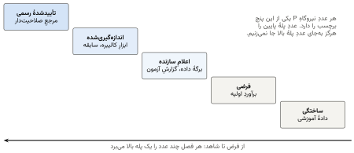
نردبان ترتیبِ اعتماد نیست به این معنا که پلهٔ بالا همیشه درستتر باشد؛ یک اندازهگیریِ بد از یک فرضِ خوب بدتر است. نردبان ترتیبِ پاسخگویی است: هر چه بالاتر، کسی بیرون از شما مسئولِ آن عدد است و دفاع از آن آسانتر. قاعدهٔ کتاب: عددِ پلهٔ پایین را هرگز بهجای عددِ پلهٔ بالا جا نمیزنیم، و هر فصل چند عدد را یک پله بالا میبرد.
دفترِ فرضها. جدول 1.7 دفترِ فرضهای انتشارِ 1.0.0 است. هر فرض شناسه دارد تا بتوان در فصلهای بعد به آن ارجاع داد («فرضِ A-012 در فصلِ ۲۰ با سناریوی S2 جایگزین میشود»). دفتر فقط با ثبتِ دلیل، فهرستِ هر چیزی که از آن فرض استفاده کرده و بازمحاسبهٔ مثالهای وابسته تغییر میکند؛ تغییرِ بیصدا ممنوع است.
| شناسه | کمیت | مقدار | وضعیت | یادداشت |
|---|---|---|---|---|
| A-001 | عرضِ جغرافیایی | 34° N | فرضی | طولِ جغرافیایی تعریف نشده: ساختگاه بیمکان است |
| A-002 | ارتفاع از سطحِ دریا | 1200 m | فرضی | |
| A-003 | منطقهٔ زمانیِ همهٔ مُهرها | UTC+04:00 | فرضی | ثابت؛ بی ساعتِ تابستانی |
| A-004 | بسامدِ نامیِ شبکه | 50 Hz | فرضی | |
| A-005 | تعداد و توانِ توربینها | 12 × 5 MW | فرضی | توربینِ خیالیِ WT-5.0-150 |
| A-006 | ارتفاعِ هاب | 100 m | فرضی | برابرِ بالاترین ارتفاعِ اندازهگیریِ داده |
| A-007 | ماژولِ خورشیدی | PVM-550 | ساختگی | ماژولِ خیالیِ 550 Wp |
| A-008 | نسبتِ DC/AC | 1.2 | فرضی | از SR-01 و SR-02 |
| A-009 | بازهٔ شارژِ قابلِ استفادهٔ باتری (S1) | 10 تا 90 % | فرضی | 32 MWh قابلِ استفاده در آغازِ عمر |
| A-010 | بازدهِ رفتوبرگشتِ باتری، AC به AC (S1) | 86 % | فرضی | یکطرفه 92.7 % |
| A-011 | افتِ ظرفیتِ باتری (S1) | 2 % در سال | فرضی | مدلِ خطیِ آموزشی |
| A-012 | منبعِ شارژِ باتری (S1) | فقط خورشید و بادِ خودِ نیروگاه | فرضی | شارژ از شبکه مجاز نیست مگر سناریویی بگوید |
| A-013 | دادهٔ ساعتیِ منبع | ساختگی، ۸۷۶۰ ساعت | ساختگی | در سناریوهای بعد با دادهٔ اندازهگیری جایگزین میشود |
1.4.4 گونههای کشوری
نیروگاهِ P یک خطِ مبنای بیطرف دارد که در آن قانون، شرکتِ برق و آییننامهٔ شبکه فرضیاند. کنارِ آن سه گونهٔ کشوری نگه میداریم: نیروگاهِ P–ایران، نیروگاهِ P–افغانستان و نیروگاهِ P–تاجیکستان. هر گونه یک لایهٔ رویین (به انگلیسی overlay) است که الزاماتِ تأییدشدهٔ آن کشور را روی خطِ مبنا میگذارد: چه نهادی پروانه میدهد، آییننامهٔ شبکهٔ آن کشور در نقطهٔ اتصال چه میخواهد، چه استانداردهایی پذیرفته است، آب و زمین چه قاعدهای دارد. لایهٔ رویین خطِ مبنا را بازنویسی نمیکند و سه کشور یکسان فرض نمیشوند. در این فصل فقط میدانیم که این سه لایه وجود دارند؛ فصلهای ۵۵ تا ۵۷ آنها را با منابعِ رسمی میسازند و هر جا منبعِ رسمی یافت نشود، مینویسند «نیازمندِ تأییدِ مرجعِ صلاحیتدار».
- چرا طولِ جغرافیاییِ ساختگاه تعریف نشده است، در حالی که عرضِ جغرافیایی تعریف شده؟ (راهنمایی: کدامیک برای محاسبهٔ خورشید لازم است و کدامیک ساختگاه را شناساییپذیر میکند؟)
- فرضِ A-012 چرا اینقدر مهم است که با حروفِ سیاه نوشته شده؟ اگر شارژ از شبکه مجاز باشد، چه چیزی در اقتصاد و در قواعدِ شبکه عوض میشود؟
- سه عدد از این فصل را نام ببرید که در فصلهای بعد باید از پلهٔ «فرضی» به پلهٔ «تأییدشدهٔ رسمی» برسند، و بگویید چه کسی آنها را تأیید میکند.
1.4.5 چرا «هیبریدی»؟ همافزاییِ باد و خورشید
نیروگاهِ هیبریدی فقط دو نیروگاه کنارِ هم نیست؛ دلیلِ وجودش این است که دو منبع در زمانهای متفاوت تولید میکنند و از یک اتصال، یک زمین و یک گروهِ بهرهبرداری مشترک استفاده میکنند. با دادهٔ ساعتیِ بسته میتوانیم این همافزایی را اندازه بگیریم.
یک هفته، ساعت به ساعت. شکل 1.11 هفتهٔ بهاریِ بسته را نشان میدهد. خورشید هر روز یک کوهانِ منظم دارد؛ باد نامنظم است، گاهی شبها و گاهی چند روز پیاپی قوی. مجموع از هر کدام کمتر صفر میشود و در بیشترِ ساعتها با فاصله زیرِ سقفِ 100 MW است.
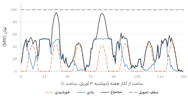
منحنیِ تداوم. اگر توانِ ساعتیِ یک سال را از بزرگ به کوچک مرتب کنیم، منحنیِ تداوم (به انگلیسی duration curve) به دست میآید: برای هر توان میگوید در چند ساعت از سال تولید از آن بیشتر است (شکل 1.12). سطحِ زیرِ منحنی انرژیِ سالانه است. منحنیِ خورشیدی پس از حدودِ ۴۵۰۰ ساعت به صفر میرسد (شبها)؛ منحنیِ بادی تقریباً همهٔ سال بالای صفر است اما کمتر به اوج میرسد؛ و منحنیِ مجموع در تمامِ طول بالای هر دو است.
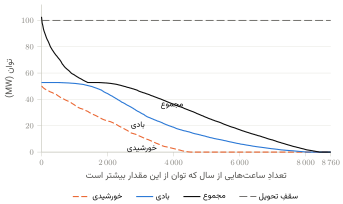
مثال 1.14 (سنجههای همافزایی) پرسش. با دادهٔ ساعتی، (الف) ضریبِ همبستگیِ توانِ ساعتیِ خورشیدی و بادی، (ب) شمارِ ساعتهایی که مجموع از چند آستانه بیشتر است، و (ج) ضریبِ ظرفیتِ اتصالِ 100 MW را در سه حالت (فقط خورشیدی، فقط بادی، هیبریدی) حساب کنید.
پاسخ.
correlation of hourly PV and wind power: -0.124 (daylight hours 07-17 only:
-0.097)
hours with PV + wind above 0.1 MW: 8398 ( 95.9 %)
hours with PV + wind above 10.0 MW: 6878 ( 78.5 %)
hours with PV + wind above 50.0 MW: 2493 ( 28.5 %)
hours with PV + wind above 80.0 MW: 276 ( 3.2 %)
hours with PV + wind above 100.0 MW: 8 ( 0.1 %)
hours below 10 MW: PV alone 5590, wind alone 3465, together 1882
export capacity factor: PV only 0.111, wind only 0.220, hybrid 0.331 of the
100 MW connectionتفسیر. (الف) ضریبِ همبستگی عددی میانِ \(-1\) و \(+1\) است که میگوید دو کمیت تا چه حد با هم بالا و پایین میروند (تعریفِ دقیق در فصلِ ۳). مقدارِ کمی منفیِ \(-0.12\) یعنی در این دادهٔ ساختگی، باد کمی تمایل دارد وقتی آفتاب کم است بیشتر باشد؛ اما همافزاییِ اصلی از همبستگی نیست، از این است که خورشید نیمی از ساعتها صفر است و باد نه. (ب) ساعتهایی که مجموع زیرِ 10 MW است ۱۸۸۲ است، در برابرِ ۵۵۹۰ ساعت برای خورشیدیِ تنها و ۳۴۶۵ ساعت برای بادیِ تنها. (ج) اتصالِ 100 MW با خورشیدیِ تنها فقط 11 % و با بادیِ تنها 22 % از ظرفیتش استفاده میکرد؛ با هر دو، 33 %. این یکی از قویترین استدلالهای اقتصادیِ نیروگاهِ هیبریدی است: یک اتصال، دو منبع، که هزینهٔ پست، خط و مطالعهٔ شبکه را میانِ انرژیِ بیشتری تقسیم میکند. محدودیت: این عددها را دادهٔ ساختگی ساخته است؛ همافزاییِ واقعی ساختگاه به ساختگاه فرق دارد و اندازهگیریِ فصلهای ۱۲ و ۱۳ آن را روشن میکند.
1.4.6 نیروگاه چگونه پول درمیآورد
نیروگاهِ تجاری انرژی میفروشد، اما ارزشِ هر مگاواتساعت به زمانِ تحویلش بستگی دارد، اگر قرارداد یا بازار این را بخواهد. سادهترین شکل، تعرفهٔ ثابت است: هر مگاواتساعت یک قیمت. شکلِ دیگر، تعرفهٔ زمانی: ساعتهای پرمصرفِ شبکه گرانتر. اینکه کدام شکل برای نیروگاهِ P صادق است، در قراردادِ خرید و قواعدِ هر کشور تعیین میشود (فصلهای ۲۱ و ۵۵ تا ۵۷)؛ اینجا فقط منطق را با عددهای ساختگی میبینیم.
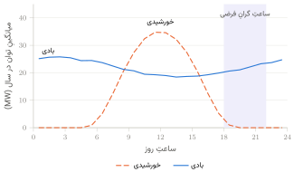
مثال 1.15 (درآمد با دو تعرفهٔ ساختگی) پرسش. درآمدِ سالانهٔ نیروگاهِ P را با یک تعرفهٔ ثابتِ 50 واحدِ پولیِ خیالی بر مگاواتساعت و با یک تعرفهٔ زمانی (90 واحد از ساعتِ ۱۸ تا ۲۲ و 40 واحد در بقیهٔ ساعتها) حساب کنید. ارزشِ میانگینِ هر مگاواتساعتِ خورشیدی و بادی را در تعرفهٔ زمانی مقایسه کنید. همهٔ قیمتها و واحدِ پولی خیالیاند.
پاسخ. درآمد برابرِ جمعِ «انرژیِ تحویلیِ هر ساعت × قیمتِ همان ساعت» است:
tariffs are FICTIONAL teaching values in an imaginary currency unit (u)
flat tariff 50 u/MWh: revenue 14.49 million u/yr
time-of-use: 90 u/MWh from 18:00 to 22:00, 40 u/MWh otherwise (time-weighted
mean 48.3 u/MWh)
revenue 13.20 million u/yr; average value 45.5 u/MWh
average value of PV energy 40.2 u/MWh, of wind energy 48.3 u/MWh
energy exported 18:00-22:00: 32.2 GWh (11.1 % of the year's export)با تعرفهٔ ثابت 14.49 و با تعرفهٔ زمانی 13.20 میلیون واحد، با اینکه میانگینِ زمانیِ تعرفهٔ زمانی (48.3) نزدیکِ تعرفهٔ ثابت است. چرا کمتر؟ چون فقط ۱۱ درصدِ انرژی در ساعتهای گران تحویل میشود، و تقریباً هیچکدام از آن خورشیدی نیست (شکل 1.13): ارزشِ میانگینِ انرژیِ خورشیدی 40.2 و انرژیِ بادی 48.3 واحد است. درس: در تعرفهٔ زمانی، زمانِ تولید به اندازهٔ مقدارِ آن مهم است، و همینجا نقشی واقعی برای باتریِ سناریوی S1 پیدا میشود: جابهجا کردنِ انرژیِ ظهر به عصر، نه ذخیرهٔ مازادِ ناچیزِ مثال 1.18. این پرسش در فصلهای ۱۹ تا ۲۱ با بهای باتری، تلفاتِ رفتوبرگشت و فرسودگی پاسخ میگیرد.
1.4.7 یک عدد از پلهٔ «فرضی» تا «تأییدشده»
شکل 1.10 گفت هر عدد پلهپله بالا میرود. بیایید سفرِ یک عدد، سقفِ توانِ تحویلیِ 100 MW، را دنبال کنیم تا ببینیم «بالا رفتن» در عمل چه سندهایی میخواهد:
| پله | سند یا رویداد | چه کسی | آنچه عدد را محکمتر میکند |
|---|---|---|---|
| فرضی | این فصل؛ بستهٔ دادهٔ 1.0.0 | نویسنده / توسعهدهنده | هیچ؛ فقط نقطهٔ آغاز |
| اعلامِ غیررسمی | پاسخِ کتبیِ اولیهٔ شرکتِ برق به پرسشِ ظرفیت | شرکتِ برق | نشانهٔ امکان، بی تعهد |
| نتیجهٔ مطالعه | گزارشِ مطالعهٔ اتصال با مدلِ شبکه | بهرهبردارِ شبکه یا مشاورِ مورد تأییدِ آن | تحلیلِ فنی با فرضهای ثبتشده (فصلِ ۲۸) |
| پیشنهادِ رسمی | پیشنهادِ اتصال با شرایط و هزینه | شرکتِ برق | تعهدِ مشروط |
| تأییدشدهٔ رسمی | موافقتنامهٔ اتصالِ امضاشده | شرکتِ برق و مالک | تعهدِ حقوقی با شرایطِ بهرهبرداری |
| اندازهگیریشده | آزمونهای پذیرش و سوابقِ بهرهبرداری | بهرهبردارِ شبکه و مالک | رفتارِ واقعی در نقطهٔ اتصال (فصلهای ۵۰ و ۵۱) |
دو نکته. نخست، ترتیبِ پلهها در این مثال با نردبانِ کلی کمی فرق دارد: برای یک الزامِ قراردادی، «تأییدشدهٔ رسمی» پیش از «اندازهگیریشده» میآید؛ برای یک دادهٔ فیزیکی (مثلاً سرعتِ باد) برعکس. نردبان ترتیبِ پاسخگویی است، نه ترتیبِ زمانی. دوم، هر پله ممکن است عدد را عوض کند: مطالعهٔ اتصال ممکن است بگوید 80 MW، و آنگاه همهٔ محاسبههای وابسته (تمرین 1.24، تمرین 1.35) باید دوباره انجام شوند. دفترِ فرضها برای همین است: بدانیم کدام نتیجهها به کدام فرض تکیه دارند.
- چرا منحنیِ تداومِ مجموع همیشه بالای هر دو منحنیِ جداگانه است؟
- اگر باد و آفتاب کاملاً همزمان بودند (همبستگیِ \(+1\))، بُرش در سقفِ 100 MW بیشتر میشد یا کمتر؟
- در تعرفهٔ زمانیِ مثال، کدام منبع از جابهجاییِ زمانیِ انرژی با باتری بیشتر سود میبرد؟ چرا؟
1.4.8 مثالِ کاربردیِ یکپارچه: نخستین پروندهٔ نیروگاهِ P
اکنون همهٔ ابزارهای این فصل را روی نیروگاهِ P بهکار میبریم، در سه سطح. داده: بستهٔ دادهٔ مرجع، انتشارِ 1.0.0، سناریوهای S0 و S1؛ وضعیتِ همهٔ ورودیها ساختگی یا فرضی.
مثال 1.16 (سطحِ مقدماتی: دست در برابرِ کد) در مثال 1.9 با ضریبهای ظرفیتِ فرضی به 88 و 184 GWh رسیدیم. برنامهٔ همراهِ فصل همان محاسبه را با دادهٔ ساعتیِ بسته و یک مدلِ بسیار سادهٔ تبدیل انجام میدهد: برای خورشیدی، توانِ DC را متناسب با تابشِ افقی میگیرد، 15 % برای دما، گردوغبار و تلفاتِ سیمکشی کم میکند، بازدهِ اینورتر را 98 % میگیرد و خروجی را به 50 MW محدود میکند؛ برای بادی، سرعتِ بادِ ارتفاعِ هاب را روی منحنیِ توانِ توربین میخواند، در دوازده ضرب میکند و 12 % برای سایهٔ بادی، خاموشی و تلفاتِ الکتریکی کم میکند. همهٔ این ضریبها فرضیاند. خروجیِ برنامه:
Plant P - first-pass (screening) numbers
data: Plant P Reference Data Pack 1.0.0, scenario S0 (no-BESS)
assumptions: PR_dc = 0.85, inverter efficiency = 0.98, wind losses = 0.12;
horizontal irradiance used for the PV array
PV energy 97.3 GWh/yr, capacity factor (50 MW AC) 0.222
wind energy 192.5 GWh/yr, capacity factor (60 MW) 0.366
sum 289.8 GWh/yr
PV DC/AC ratio 1.20: 17 h at the inverter limit, 15.7 MWh clipped (0.02 % of
unclipped AC)
highest hourly PV + wind 102.7 MW (export limit 100 MW)
hours above the export limit: 8
S0 curtailed 13.8 MWh/yr (0.005 % of generation)
S0 exported 289.8 GWh/yr, capacity factor (100 MW) 0.331مقایسه. کد برای خورشیدی 97.3 GWh (ضریبِ ظرفیتِ 22.2 %) و برای بادی 192.5 GWh (36.6 %) میدهد؛ محاسبهٔ دستی 88 و 184. تفاوت ده درصدی است و هیچکدام درستتر نیست: دستی از دو ضریبِ حدسی آمده و کد از دادهٔ ساختگی و سه ضریبِ حدسیِ دیگر. آنچه مقایسه به ما میگوید این است که دو راهِ مستقل به یک مرتبهٔ بزرگی رسیدهاند، پس اشتباهِ فاحش (یکای غلط، ضریبِ جاافتاده) در کار نیست. این همان «وارسیِ مستقل» است که فصلِ ۲ به روش تبدیلش میکند.
دو مشاهدهٔ تازه که محاسبهٔ دستی نمیتوانست بدهد: اینورترها فقط در ۱۷ ساعتِ سال به سقفِ 50 MW میرسند و انرژیِ بریدهشده ناچیز است؛ پس در این مدلِ خام نسبتِ 1.2 تقریباً هیچ بُرشی ندارد (فصلِ ۱۰ نشان میدهد مدلِ دقیقتر، با تابشِ روی سطحِ شیبدار و دمای سلول، نتیجهٔ متفاوتی میدهد). و بیشینهٔ مجموعِ تولید 102.7 MW است، یعنی فقط 2.7 MW بالای سقفِ شبکه، و فقط در ۸ ساعتِ سال.
مثال 1.17 (سطحِ میانی: معلوم، فرض، مجهول، تأییدیه) برای نقطهٔ اتصالِ نیروگاهِ P، آنچه را میدانیم، فرض کردهایم، نمیدانیم و باید تأیید بگیریم جدا میکنیم (جدول 1.9). این جدول الگوی فهرستِ مجهولها (به انگلیسی unknowns register) و فهرستِ تأییدیهها (به انگلیسی approvals register) است که از این فصل آغاز میشوند و شناسههای U و P میگیرند.
| مورد | وضعیت | چه میدانیم / چه لازم است | چه کسی روشن میکند |
|---|---|---|---|
| ولتاژِ نقطهٔ اتصال 132 kV | فرض (SR-05) | پستِ نزدیکِ شبکه این سطح را دارد؟ | شرکتِ برق، در پاسخ به درخواستِ اتصال |
| سقفِ تحویل 100 MW | فرض (SR-06) | ظرفیتِ خطوط و ترانسفورماتورهای شبکه در آن نقطه | مطالعهٔ اتصالِ بهرهبردارِ شبکه |
| مالکیتِ خطِ خروجی | فرض، باز (U-001) | رویهٔ آن کشور؛ طولِ مسیر؛ حقِ عبور | موافقتنامهٔ اتصال؛ فصلِ ۵۵ تا ۵۷ |
| رفتارِ لازم در خطای شبکه | مجهول (U-002) | آییننامهٔ شبکه چه میخواهد (فصلِ ۲۸) | بهرهبردارِ شبکه |
| اجازهٔ شارژِ باتری از شبکه | فرض: ممنوع (A-012) | قاعدهٔ تعرفه و شبکه | تنظیمگر و شرکتِ برق |
| محلِ دقیقِ کنتورِ فروش | مجهول (U-003) | اینسو یا آنسوی ترانسفورماتورِ اصلی؟ تلفاتِ چه کسی؟ | قراردادِ خریدِ برق |
| فاصله تا پستِ شبکه | مجهول (U-004) | ساختگاه بیمکان است؛ در سناریوهای بعد تعیین میشود | توسعهدهنده |
| پروانهٔ تولید | تأییدیهٔ لازم (P-001) | نهادِ صادرکننده، شرایط، مدت | فصلهای ۵۴ تا ۵۷ |
| موافقتنامهٔ اتصال | تأییدیهٔ لازم (P-002) | پیشنیازِ تأمینِ مالی | بهرهبردارِ شبکه |
| تأییدِ تنظیماتِ حفاظتِ نقطهٔ اتصال | تأییدیهٔ لازم (P-003) | مثال 1.3 | بهرهبردارِ شبکه |
درسِ این جدول: در آغازِ پروژه، ستونِ وضعیت تقریباً هیچ «تأییدشدهای» ندارد و این طبیعی است. آنچه غیرِطبیعی و خطرناک است، نوشتنِ «132 kV» و «100 MW» در یک نقشه بی برچسب، طوری که شش ماه بعد کسی آن را تأییدشده بپندارد.
مثال 1.18 (سطحِ یکپارچه: با باتری یا بی باتری؟) نیروگاهِ P در سناریوی S1 باتریِ 20 MW / 40 MWh دارد. نخستین و سادهترین نقشی که میتوان برای آن تصور کرد این است: در ساعتهایی که تولید از سقفِ 100 MW بیشتر است، مازاد را ذخیره کند و بعداً، وقتی جا هست، تحویل دهد. آیا این نقش باتری را توجیه میکند؟
ابتدا ببینیم باد و خورشید چگونه همزمان میشوند. شکل 1.14 روزِ تابستانیِ بسته (23 ژوئن) را نشان میدهد: خورشید در میانهٔ روز و باد در شب و صبحِ زود قوی است؛ در این روز مجموع هیچگاه از 63 MW فراتر نمیرود. شکل 1.15 همین مکملی را در طولِ سال نشان میدهد: خورشید در تابستان و باد در پاییز و زمستانِ این دادهٔ ساختگی بیشتر است.
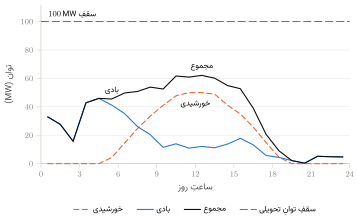
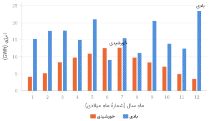
حالا بخشِ دومِ گزارشِ برنامه، که باتریِ S1 را فقط در همین نقش (ذخیرهٔ مازادِ بریدهشده) شبیهسازی میکند. شبیهسازی ساده و حریصانه است: هر وقت مازاد هست و باتری جا دارد شارژ میکند، هر وقت شبکه جا دارد و باتری پر است تخلیه میکند، با بازدهِ یکطرفهٔ \(\sqrt{0.86} \approx 0.927\) در هر جهت و بی شارژ از شبکه (فرضِ A-012):
data: Plant P Reference Data Pack 1.0.0, scenario S1 (BESS)
battery role in this test: store curtailed energy only, deliver it later
energy charged 13.8 MWh/yr
energy delivered later 11.8 MWh/yr
full-cycle equivalents 0.43 per year
exported 289.8 GWh/yr
duration at rated power: 2.0 h nominal, 1.6 h usableنتیجه. در کلِ سال فقط 13.8 MWh بهخاطرِ سقفِ شبکه بریده میشود، یعنی پنجهزارمِ درصدِ تولید، و باتری از آن 11.8 MWh را پس میدهد. یک باتریِ 40 MWh که در سال 12 MWh انرژی جابهجا میکند، یعنی کمتر از یک سیکلِ کامل در سال. با این عددها نقشِ «ذخیرهٔ مازاد» بههیچوجه باتری را توجیه نمیکند. این نتیجهٔ منفی ارزشمند است: به ما میگوید اگر نیروگاهِ P باتری داشته باشد، باید به دلیلِ دیگری باشد: جابهجا کردنِ انرژی به ساعتهای گرانتر، خدماتِ شبکه مثلِ کنترلِ بسامد، نرم کردنِ شیبِ تغییراتِ توان، یا الزامِ قراردادی. هر یک از این نقشها سازوکار، اقتصاد و قواعدِ خودش را دارد و فصلهای ۱۹ تا ۲۱ آنها را یکییکی میسنجند. پرسشِ باز برای پرونده: «نقشِ باتری در S1 چیست؟» را با شناسهٔ U-005 ثبت میکنیم.
وارسیِ معقول بودن. چرا بُرش اینقدر کم است؟ چون جمعِ توانِ نامی فقط 10 % بالای سقف است و برای رسیدنِ مجموع به 100 MW باید آفتابِ تندِ ظهر با بادی نزدیکِ توانِ نامی همزمان شود، که در این دادهٔ ساختگی بهندرت پیش میآید. اگر سقف 80 MW بود چه میشد؟ این پرسشِ تمرینِ سطحِ سوم است. محدودیتِ مدل: همزمانی را دادهٔ ساختگی تعیین کرده است؛ در ساختگاهِ واقعی ممکن است باد و آفتاب همزمانتر یا ناهمزمانتر باشند، و این یکی از نخستین چیزهایی است که اندازهگیریِ فصلهای ۱۲ و ۱۳ باید روشن کند.
1.4.9 تحویلدادنیِ نیروگاهِ P
هر فصل یک برگِ ماندگار به پروندهٔ نیروگاهِ P میافزاید و فصلِ ۵۹ همهٔ برگها را کنارِ هم میگذارد. برگِ این فصل، پروندهٔ نسخهٔ 0.1 است:
- بیانیهٔ دامنه: بخش 1.4.1، با فهرستِ آنچه بیرونِ دامنه است.
- نمودارِ جریانِ انرژی: شکل 1.8.
- نمودارِ مرزِ مالکیت و مسئولیت: شکل 1.9 و جدول 1.6.
- نقشهٔ مسئولیت: جدول 1.1 و الگوی RACI در جدول 1.2.
- بستهٔ دادهٔ مرجع، انتشارِ 1.0.0: عددهای بذری، سناریوهای S0 و S1، دادهٔ ساعتی و تجهیزِ خیالی، با چکسام.
- دفترِ فرضها: A-001 تا A-013 (جدول 1.7).
- فهرستِ مجهولها: U-001 مالکیتِ خطِ خروجی؛ U-002 رفتارِ لازم در خطای شبکه؛ U-003 محلِ کنتور؛ U-004 فاصله تا پستِ شبکه؛ U-005 نقشِ باتری در S1.
- فهرستِ تأییدیهها: P-001 پروانهٔ تولید؛ P-002 موافقتنامهٔ اتصال؛ P-003 تأییدِ تنظیماتِ حفاظت.
- دفترِ تصمیم: D-001: «خطِ مبنای نیروگاهِ P با عددهای بذریِ جدول 1.5 و مالکیتِ خطِ خروجی توسطِ پروژه پذیرفته شد؛ مبنا: تصمیمِ آموزشیِ نویسنده؛ شرط: هر دو فرض در گونههای کشوری بازبینی شود.»
- نخستین نتیجهٔ غربالگری: حدودِ 290 GWh در سال با برچسبِ فرضی/ساختگی، بُرشِ ناچیز در سقفِ 100 MW، و اینکه نقشِ باتری هنوز معلوم نیست.
- سنجههای همافزایی: ضریبِ ظرفیتِ اتصال 0.33 در برابرِ 0.11 و 0.22 برای هر منبعِ تنها؛ منحنیهای تداوم (مثال 1.14).
- زمانبندیِ توسعه و مسیرِ بحرانی: ۲۹ ماه با مسیرِ A–B–G–H–I (مثال 1.12)، با شناوریِ هر فعالیت؛ و پروفیلِ هزینهٔ انباشته (شکل 1.6).
- دفترِ ریسک: R1 تا R8 با امتیاز و دسته (شکل 1.7)، و اقدامِ نخست برای R1 (مثال 1.13).
- نقشهٔ ذینفعان (شکل 1.2) و تصمیمِ D-004: دو بستهٔ قرارداد (توربین؛ بقیهٔ نیروگاه) با مرزِ صریحِ میانِ آنها (مثال 1.4).
این پرونده در فصلهای بعد نسخه میخورد: 0.2 پس از فصلِ ۵ که داده را با کد وارسی میکنیم، 0.3 پس از فصلِ ۱۶ که انرژی عدمِ قطعیت میگیرد، و همینطور تا نسخهٔ 1.0 در فصلِ ۵۹.
- چرا پرونده از نسخهٔ 0.1 آغاز میشود و نه 1.0؟
- کدامیک از چهارده قلمِ بالا در یک پروژهٔ واقعی در پایانِ غربالگری وجود دارد و کدامیک زودتر از موعد است؟
- تصمیمِ D-001 چه شرطی دارد و چه کسی باید آن را پیگیری کند؟
1.5 ت. راهنمای خواننده
1.5.1 ساختارِ هر فصل و پنج پله
هر فصلِ این کتاب یک تکنگاشت است: از صفر تا تسلط در یک موضوع، با همین ساختارِ ثابت:
- نقشهٔ فصل: اهدافِ یادگیری، پیشنیازها با یک پیشآزمون، و جایگاهِ فصل در نیروگاهِ P.
- بخشهای حرفدار (الف، ب، پ، …): هر بخش چند درس دارد و هر درس همین ترتیب را میرود: شهود و شکل، سپس تعریف و نماد و یکا، سپس استخراجِ رابطه با فرضها و حدودِ اعتبارش، سپس مثالهای حلشده، سپس خطاهای رایج و حدودِ ایمنی، و در پایان خودآزمایی.
- گردشِ کارِ طراحی، آزمایشگاهِ پایتون هر جا محاسبه کمک میکند، بخشِ ساخت و تولیدِ صنعتی (یا توضیحِ اینکه چرا در این فصل موضوعیت ندارد)، و جعبهٔ استاندارد و انطباق.
- تحویلدادنیِ نیروگاهِ P.
- جمعبندی، واژگانِ فارسی–انگلیسی و منابع.
- ارزیابیِ پلکانی و سپس پاسخنامه و راهحلها.
ارزیابیِ هر فصل پنج پله دارد و همین پنج پله معیارِ «تسلط» در این کتاب است:
| پله | نام | از خواننده میخواهد |
|---|---|---|
| ۱ | مبانی | اصطلاحها، شهود و پیشنیازها را به زبانِ خود بازگو کند |
| ۲ | تحلیل | رابطهها را استخراج کند و مسئلههای بسته را حل کند |
| ۳ | کاربرد | با دادهٔ واقعینما، نقشه و سندِ سازنده کار کند |
| ۴ | طراحی و راستیآزمایی | یک محاسبه، مشخصات، مدل، نقشه، طرحِ آزمون یا رویهٔ بازبینیشده تولید کند |
| ۵ | تسلط | از انتخابها دفاع کند، عدمِ قطعیت را کمّی کند، خطا و کاستی بیابد، با تغییرِ یک قید دوباره طراحی کند و مرزِ تأییدِ تخصصی را بشناسد |
در پایانِ هر بخشِ کتاب (مجموعهای از چند فصل) یک دروازهٔ تسلط هست: چند پرسشِ تجمیعی که میگوید آیا آمادهٔ بخشِ بعدید. مثلاً دروازهٔ پایانِ بخشِ یکم میپرسد: آیا میتوانید یکاها را وارسی کنید، فرضها را توضیح دهید، نمودار بخوانید و یک محاسبهٔ پایه را بازتولید کنید؟
1.5.2 کادرها، معادلهها، کد و نمودارها
کادرها. پنج نوع کادرِ رنگی در کتاب هست و هر کدام یک معنا دارد: نکته برای اهداف و تذکرها؛ راهنمایی برای خودآزمایی و پیشآزمون؛ هشدار برای ایمنی؛ احتیاط برای مرزِ کارِ تخصصی (کاری که فهمیدنش را یاد میگیرید اما انجام یا تأییدِ نهاییاش با صلاحیتدار است)؛ و مهم برای جعبهٔ استاندارد و انطباق. مثالها و تمرینها شماره دارند («مثالِ ۱٫۳») و در سراسرِ کتاب به آنها ارجاع داده میشود.
معادلهها. هر رابطهٔ مهم شماره دارد، نمادها و یکاهایش تعریف میشوند، فرضها و حدودِ اعتبارش گفته میشود، و دستِکم یک بار با دست محاسبه و با کد مقایسه میشود. نمادها در سراسرِ کتاب یکیاند (پیوستِ الف فهرستِ کاملِ آنهاست): کمیتها با حروفِ کج (\(V\)، \(I\)، \(P\))، یکاها با حروفِ راست (V، A، W). ارقام در متنِ فارسی فارسیاند («۱۲ توربین») و در کمیتهای یکادار و در ریاضی لاتین (60 MW، \(P = 60\ \text{MW}\)). فصلِ ۲ تمامِ قواعدِ یکا و دقت را میسازد.
کد. کدِ همراهِ کتاب به زبانِ پایتون است و از صفر در فصلِ ۵ آموزش داده میشود. تا آنجا، خواندنِ خروجیها کافی است و هر قطعهکدی که میبینید را میتوانید نادیده بگیرید. هر قطعهکد در کتاب مستقیماً از فایلِ آزمودهشدهٔ همراه چاپ شده است؛ یعنی آنچه میبینید همان است که اجرا شده. کدها آموزشیاند: نرمافزارِ طراحیِ گواهیشده نیستند و هرگز نباید به تجهیزِ واقعی وصل شوند. نامهای درونِ کد انگلیسیِ سادهاند تا با منابعِ جهانی بخوانند؛ توضیحها فارسی است.
نمودارها. نمودارهای کتاب از چند خانوادهاند و هر کدام چیزِ متفاوتی میگویند: نمودارِ بلوکی و جریانِ انرژی (این فصل)، تکخطیِ برق (فصلِ ۲۳)، شماتیک و سیمکشی (فصلِ ۲۴)، زمین و حفاظت (فصلِ ۲۶)، کنترل (فصلِ ۳۴)، توپولوژیِ شبکهٔ ارتباطی (فصلِ ۳۵)، جانماییِ ساختگاه (فصلِ ۱۴)، نمای مونتاژ و انفجاری و نقشهٔ فرایندِ ساخت (فصلهای ۴۰ تا ۴۸). در نمودارهای داده، هر موجودیت رنگِ ثابتِ خودش را در کلِ کتاب دارد: باد آبی، خورشید نارنجی، باتری سبز، بار و شبکه بنفش، تلفات و خطا قرمز؛ و چون رنگ بهتنهایی قابلِ اتکا نیست، هر خط الگوی خطچینِ خودش و برچسبِ مستقیم هم دارد. نمودارهای فنی قراردادِ جهانی را نگه میدارند: منبع در چپ، شبکه در راست. نمودارهایی که ترتیبِ زمانی یا روایی دارند (مثلِ چرخهٔ عمر) مانندِ متن از راست به چپ خوانده میشوند و این در شرحِ شکل گفته میشود.
1.5.3 تمرینها، پاسخنامه و دروازههای تسلط
خودآزماییهای میانِ متن کوتاهاند و پاسخشان در همان درس است؛ برای آنها پاسخنامهای نیست و اگر نتوانستید جواب دهید، درس را دوباره بخوانید. تمرینهای پایانِ فصل پلکانیاند و پاسخنامهٔ کامل در پایانِ همان فصل است: برای مسئلههای عددی راهحلِ گامبهگام، و برای مسئلههای طراحی و بازبینی، معیارهای یک پاسخِ خوب، چون این مسئلهها یک جوابِ یکتا ندارند. توصیهٔ ما: پیش از دیدنِ پاسخ، جوابِ خودتان را بنویسید و برچسبِ وضعیتِ هر عددی را که بهکار بردهاید کنارش بگذارید.
1.5.4 نقشهٔ کتاب و وابستگیِ فصلها
شکل 1.16 ده بخشِ کتاب را نشان میدهد. مسیرِ کلی چنین است: بخشِ یکم ابزارِ فکر کردن و محاسبه را میدهد؛ بخشِ دوم برق و تجهیزاتِ تبدیلِ انرژی را از مدارِ ساده تا توربین میسازد؛ بخشِ سوم میگوید چقدر باد و آفتاب هست و چقدر انرژی میشود؛ بخشِ چهارم نیروگاه را معماری میکند و اقتصادش را میسنجد؛ بخشِ پنجم مهندسیِ برقِ تفصیلی و اتصال به شبکه است؛ بخشِ ششم زمین، سازه، ایمنی، حریق و محیط؛ بخشِ هفتم کنترل، ارتباطات و امنیت؛ بخشِ هشتم خرید، ساختِ کارخانهایِ تکتکِ تجهیزات، اجرا و راهاندازی؛ بخشِ نهم بهرهبرداری تا برچیدن؛ و بخشِ دهم انطباق با مقرراتِ سه کشور و پروژهٔ پایانی.
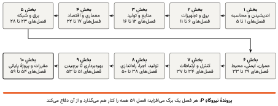
هر فصل در آغاز پیشنیازهایش را میگوید. خوانندهای که ریاضی و فیزیکِ دبیرستان را خوب به یاد دارد میتواند فصلهای ۳ و ۴ را سریعتر بگذراند اما نباید رد کند، چون نمادها و قراردادهای کتاب همانجا ثابت میشوند. چند موضوع عمداً در دو جا میآیند: مثلاً ترانسفورماتور یک بار در فصلِ ۲۵ بهعنوانِ تجهیزی که مهندسِ نیروگاه انتخاب و مشخص میکند، و بار دیگر در فصلِ ۴۳ بهعنوانِ محصولی که در کارخانه طراحی و ساخته و آزموده میشود. این تکرار نیست؛ دو نقش است و هر دو برای وارسیِ یک پروژه لازماند.
1.5.5 مسیرهای خواندن برای خوانندگانِ مختلف
کتاب برای خواندن از آغاز تا پایان نوشته شده است و پروندهٔ نیروگاهِ P فصل به فصل ساخته میشود. اما خوانندگان با هدفهای متفاوت میآیند. جدول 1.11 برای چهار هدفِ رایج یک مسیرِ نخست پیشنهاد میکند؛ پس از آن، فصلهای جاافتاده را به ترتیب بخوانید. فصلهای ۱ تا ۵ در همهٔ مسیرها هستند، چون نمادها، قراردادها و ابزارهای کتاب آنجا ساخته میشوند.
| هدفِ خواننده | مسیرِ نخست (پس از فصلهای ۱ تا ۵) | چرا |
|---|---|---|
| مهندسِ برقِ نیروگاه | ۶ تا ۹، ۱۸، ۲۳ تا ۲۸، ۳۴، ۵۰ | از مدار تا شبکه و راهاندازی |
| توسعهدهنده یا مهندسِ مالک | ۱۲ تا ۱۷، ۲۱، ۲۲، ۳۳، ۳۸، ۳۹، ۵۴ | از منبع و امکانسنجی تا قرارداد و انطباق |
| مهندسِ ساخت و کیفیت | ۴، ۸ تا ۱۱، ۱۹، ۴۰ تا ۴۸، ۴۹ | از مواد و تجهیز تا کارخانه و کارگاه |
| بهرهبردار و نگهدار | ۶، ۷، ۲۰، ۳۲، ۳۴ تا ۳۷، ۵۰ تا ۵۳ | از کنترل و ایمنی تا پایش و نگهداری |
برنامهٔ مطالعه. هر فصلِ اصلی برای مطالعهٔ جدی حدودِ دو تا سه هفته کار میخواهد، اگر همهٔ مثالها را با دست و کد بازتولید کنید و تمرینهای پلههای ۱ تا ۴ را حل کنید. پلهٔ ۵ را میتوانید پس از فصلهای بعدی دوباره ببینید؛ بسیاری از پرسشهای تسلط با دانشِ فصلهای بعد کاملتر پاسخ میگیرند.
1.5.6 پروندهٔ نیروگاهِ P روی دیسک
پرونده مجموعهای از فایلهاست که خودتان، فصل به فصل، میسازید. ساختارِ پیشنهادیِ پوشهها چنین است؛ شمارهها با بخشهای پروژهٔ پایانیِ فصلِ ۵۹ میخوانند:
plant-p-dossier/
00-register/ decision log, assumptions ledger, unknowns, approvals
01-basis/ scope, seed ratings, data-pack release notes
02-resource/ wind and solar measurement plans and data quality
03-site/ layout, constraints, water balance
04-yield/ energy model, losses, uncertainty
05-architecture/ block diagrams, equipment selection rationale
06-electrical/ one-lines, calculation sheets (DC-001, ...)
07-civil-safety-env/ civil basis, safety, fire, environment, social
08-grid/ studies, connection boundary, grid services
09-procurement/ specifications, quality plans
10-delivery/ construction, inspection, commissioning, handover
11-operation/ procedures, maintenance, asset data
12-ram/ reliability and availability basis
13-economics/ cash flow, finance, risks, footprint
14-country/ Iran, Afghanistan, Tajikistan verification filesهر فایل در پرونده سربرگی دارد: شناسه (مثلاً DC-001)، نسخه، تاریخ، تهیهکننده، بازبین، وضعیت (پیشنویس، بازبینیشده، تأییدشده)، و فهرستِ فرضها و دادههایی که از آنها استفاده کرده است. فصلِ ۲ این قواعد را برای برگههای محاسبه کامل میکند و فصلِ ۳۸ برای همهٔ مدارکِ پروژه.
1.5.7 کار با کدِ همراه
کدِ همراهِ کتاب در پوشهٔ companion/ است: بستهٔ plantp (توابعِ آزموده)، برنامههای هر فصل (companion/ch01/، companion/ch06/، …)، آزمونهای خودکار (companion/tests/) و بستهٔ داده (companion/plantp_data/). پس از نصبِ پایتون (فصلِ ۵)، از ریشهٔ پروژه:
python -m pytest companion # run every test
python -m companion.ch01.screening_report # rebuild chapter 1 numbers
python companion/plantp_data/generate_release.py --check # verify the data packاگر خروجیِ برنامهای با عددِ کتاب نخواند، یکی از سه چیز رخ داده است: بستهٔ داده تغییر کرده (چکسام را وارسی کنید)، نسخهٔ کتابخانهها فرق دارد، یا کتاب اشتباه دارد. در هر سه حالت، اختلاف خودش یک یافته است و باید ثبت شود؛ این همان عادتی است که کتاب میخواهد بسازد.
1.5.8 نخستین واژهنامه و نقشهٔ مسئولیت
جدول 1.12 واژگانِ این فصل است. از این پس هر فصل چنین جدولی دارد و پیوستِ الف همهٔ آنها را یکجا، با برابرهای دری و تاجیکی هر جا تفاوتی معنادار باشد، گرد میآورد. نقشهٔ مسئولیتِ نخستِ نیروگاهِ P همان جدول 1.1 و جدول 1.2 است؛ در فصلهای بعد برای هر تصمیمِ مهم یک سطرِ RACI به آن افزوده میشود.
| فارسی | انگلیسی | یادداشت |
|---|---|---|
| نیروگاهِ هیبریدی | hybrid power plant | نیروگاهِ ترکیبی هم بهکار میرود |
| نیروگاهِ تجاری | commercial power plant | |
| شرکتِ پروژه | special-purpose vehicle, SPV | |
| قراردادِ خریدِ برق | power purchase agreement, PPA | |
| مالک | owner | |
| توسعهدهنده | developer | |
| وامدهنده | lender | |
| مهندسِ مستقل | independent engineer | مشاورِ فنیِ وامدهنده |
| شرکتِ برق / خریدار | utility / off-taker | در دری: شرکتِ برشنا بهعنوانِ نامِ خاص |
| بهرهبردارِ شبکه | grid operator, system operator | |
| نهادِ تنظیمگر | regulator | |
| مرجعِ مجوز | permitting authority | |
| مهندسِ مالک | owner’s engineer | |
| پیمانکارِ طرحوساخت | EPC contractor | در دری: قراردادی |
| سازندهٔ اصلیِ تجهیز | original equipment manufacturer, OEM | |
| بهرهبردار و نگهدار | O&M contractor | |
| بازرس | inspector | |
| ماتریسِ مسئولیت | RACI matrix | مجری، پاسخگو، مشورتشونده، مطلع |
| تأییدکنندهٔ بیرونی | approver | |
| مرجعیتِ تأیید | approval authority | |
| چرخهٔ عمر | life cycle | |
| دروازهٔ تصمیم | stage gate | |
| تصمیمِ نهاییِ سرمایهگذاری | final investment decision, FID | |
| بهرهبرداریِ تجاری | commercial operation date, COD | |
| مانعِ قطعی | fatal flaw | |
| توان | power | وات؛ در تاجیکی: اقتدار |
| انرژی | energy | واتساعت |
| ضریبِ ظرفیت | capacity factor | |
| نسبتِ DC/AC | DC/AC ratio | |
| بُرشِ توان | clipping | محدود شدنِ خروجی به توانِ اینورتر |
| کاهشِ تولید به دستورِ شبکه | curtailment | |
| شینهٔ جمعآوری | collector bus | |
| شبکهٔ جمعآوری | collector system | |
| پستِ خروجیِ نیروگاه | export substation | |
| نقطهٔ اتصال | point of connection, POC | |
| سقفِ توانِ تحویلی | export limit | |
| کنتورِ فروش | revenue meter | |
| موافقتنامهٔ اتصال | connection agreement | |
| بستهٔ دادهٔ مرجع | reference data pack | |
| دفترِ فرضها | assumptions ledger | |
| فهرستِ مجهولها | unknowns register | |
| فهرستِ تأییدیهها | approvals register | |
| دفترِ تصمیم | decision log | |
| لایهٔ رویینِ کشوری | country overlay | |
| ساختگی / فرضی / اعلامِ سازنده / اندازهگیریشده / تأییدشدهٔ رسمی | synthetic / assumed / vendor / measured / verified | پنج برچسبِ وضعیت |
| پوششِ مزرعهٔ بادی | wind-farm envelope | در برابرِ زمینِ اشغالشده |
| تولیدکنندهٔ مستقل | independent power producer, IPP | |
| ساخت–بهرهبرداری–انتقال | build–operate–transfer, BOT | |
| ریسکِ مرزِ مشترک | interface risk | |
| ذینفع | stakeholder | |
| نقشهٔ قدرت–علاقه | power–interest grid | |
| روشِ مسیرِ بحرانی | critical path method, CPM | |
| شناوری | float, slack | |
| منحنیِ «S»ِ هزینه | S-curve | |
| ریسک، ماتریسِ احتمال–اثر | risk, likelihood–impact matrix | |
| منحنیِ تداوم | duration curve | |
| ضریبِ همبستگی | correlation coefficient | |
| تعرفهٔ ثابت / زمانی | flat / time-of-use tariff |
1.6 ساخت و تولیدِ صنعتی در این فصل
این فصل محصولِ فیزیکی ندارد که ساخته شود؛ موضوعش پروژه است، نه تجهیز. با این حال همینجا یک تمایز را میکاریم که در بخشِ هشتم میروید: چرخهٔ عمرِ پروژه (شکل 1.3) با چرخهٔ عمرِ محصول فرق دارد. هر توربین، ماژول، اینورتر، ترانسفورماتور، باتری و کابلِ نیروگاهِ P پیش از آنکه به مرحلهٔ «تدارکات» پروژه برسد، چرخهٔ خودش را در کارخانه طی کرده است: نیازمندی و فیزیک، معماری و انتخابِ گزینه، طراحی، ساخت یا مونتاژ، کنترلِ کیفیت و آزمون، یکپارچهسازی، و بهرهبرداری و پایانِ عمر. این زنجیرهٔ هشتحلقهای برای هر تجهیزِ مهم در فصلهای ۴۰ تا ۴۸ دنبال میشود و دو جا با چرخهٔ پروژه میخورد: در تدارکات، که مشخصاتِ پروژه به سفارشِ کارخانه تبدیل میشود، و در آزمونِ پذیرشِ کارخانهای، که پروژه پیش از حمل وارسی میکند آنچه ساخته شده همان است که خواسته. آموزشِ ساختِ تجهیز در این کتاب برای سوادِ مهندسی و وارسی است، نه برای اینکه تجهیزِ نیروگاهی در کارگاهِ کوچک ساخته شود.
1.7 جعبهٔ استاندارد و انطباق
در هر فصل این جعبه میپرسد: کدام الزامِ بیرونی بر این موضوع حاکم است، از کجا باید آن را راستیآزمایی کرد، چه پیامدی در طراحی دارد، چه شاهدی انطباق را نشان میدهد، چه کسی تأیید میکند، و ویرایش و تاریخِ راستیآزمایی چیست. در این فصل هنوز هیچ منبعی راستیآزمایی نشده؛ جعبه فقط پرسشها را میکارد و همه را به فصلهای ۵۴ تا ۵۸ حواله میدهد.
| پرسش | منبعی که باید راستیآزمایی شود | پیامد در طراحی | شاهد و تأییدکننده | وضعیت |
|---|---|---|---|---|
| چه نهادی پروانهٔ تولیدِ برق میدهد و با چه شرایطی؟ | قانون و آییننامهٔ همان کشور | زمانبندی، مالکیت، تعرفه | پروانهٔ صادرشده؛ تنظیمگر | نیازمندِ تأیید (فصلهای ۵۵ تا ۵۷) |
| رفتارِ لازم در نقطهٔ اتصال در کدام سند است؟ | آییننامهٔ شبکهٔ همان کشور، ویرایشِ جاری | مشخصاتِ اینورتر و توربین، حفاظت، کنترلگر | مطالعات و آزمونهای پذیرش؛ بهرهبردارِ شبکه | نیازمندِ تأیید |
| مرزِ مالکیتِ داراییهای اتصال چگونه تعیین میشود؟ | رویهٔ شرکتِ برق و موافقتنامهٔ اتصال | دامنهٔ طراحی و هزینه | موافقتنامهٔ امضاشده؛ شرکتِ برق | نیازمندِ تأیید |
| کدام استانداردهای بینالمللی برای تجهیز پذیرفتهاند؟ | فهرستِ استانداردهای ملی و پذیرفته | مشخصاتِ خرید و گواهیها | گواهیِ انطباقِ معتبر؛ مرجعِ استاندارد یا بازرس | نیازمندِ تأیید (فصلِ ۵۸) |
| چه کسی صلاحیتِ امضای طراحیِ سازه، برق و حفاظت را دارد؟ | قانونِ نظامِ مهندسی یا معادلِ آن | گردشِ تأیید و بیمهٔ مسئولیت | امضا و شمارهٔ پروانه؛ نظامِ مهندسی | نیازمندِ تأیید |
دفترِ استانداردها (پیوست U) با همین ستونها نگه داشته میشود و هیچ استانداردی بی ویرایش، وضعیتِ پذیرش و تاریخِ راستیآزمایی در آن ثبت نمیشود.
1.8 جمعبندی
- نیروگاهِ تجاری برای فروشِ انرژی، با سرمایهٔ بیرونی، زیرِ تعهد و نظارت و در قالبِ یک شرکتِ پروژه ساخته میشود؛ پیامدش این است که هر عدد سند میخواهد.
- دهها بازیگر پروژه را پیش میبرند؛ برای هر تصمیم باید دانست چه کسی مجری، پاسخگو، مشورتشونده، مطلع و تأییدکنندهٔ بیرونی است. دانستن با تصمیمگرفتن و با تأییدکردن یکی نیست.
- این کتاب دانستن تا حدِ تسلط را میآموزد؛ مرجعیتِ تأیید از پروانه و صلاحیتِ ثبتشده میآید و کارهایی مشخص همیشه با صلاحیتدار میماند.
- چرخهٔ عمر سیزده مرحله دارد؛ درآمد فقط در یازدهمی است؛ دروازههای تصمیم با شواهدِ ازپیشمعلوم کار میکنند و توانِ اثرگذاری در مراحلِ اول بیشینه و هزینهٔ انجامشده کمینه است.
- سنجههای غربالگری (انرژی از ضریبِ ظرفیت، نسبتِ DC/AC، سقفِ تحویل، زمین، بودجهٔ توسعه) با دست حساب میشوند و با کد وارسی.
- نیروگاهِ P یک خطِ مبنای خیالی با عددهای بذریِ فرضی، دو سناریوی S0 و S1، مرزِ مالکیتِ ثبتشده، بستهٔ دادهٔ نسخهدار با چکسام، دفترِ فرضها، و سه لایهٔ رویینِ کشوری است. هر عدد یکی از پنج برچسبِ وضعیت را دارد و فصلها آنها را پلهپله بالا میبرند.
- نخستین غربالگری: حدودِ 290 GWh در سال، بُرشِ ناچیز در سقفِ 100 MW، و این نتیجهٔ مهم که نقشِ «ذخیرهٔ مازاد» باتریِ S1 را توجیه نمیکند؛ نقشِ باتری یک مجهولِ ثبتشده است.
- الگوی مالکیت و قرارداد جای ریسکها را تعیین میکند؛ ریسکِ مرزِ مشترک یا با پیمانکار است یا با مالک. نقشهٔ قدرت–علاقه ذینفعان را دستهبندی میکند اما قدرتِ کم دلیلِ نادیده گرفتن نیست.
- روشِ مسیرِ بحرانی نشان میدهد کدام فعالیت مدتِ توسعه را تعیین میکند (در نیروگاهِ P، اندازهگیریِ یکسالهٔ باد) و با تغییرِ یک فرض، مسیر عوض میشود. منحنیِ «S» نشان میدهد پول کِی خرج میشود. ماتریسِ احتمال–اثر ریسکها را مقایسه میکند و اقدامی که شاهد تولید نکند ریسک را کم نکرده است.
- همافزاییِ باد و خورشید از این است که خورشید نیمی از ساعتها صفر است و باد نه: یک اتصال، دو منبع، ضریبِ ظرفیتِ اتصالِ تقریباً سه برابرِ خورشیدیِ تنها. در تعرفهٔ زمانی، زمانِ تولید ارزش را تعیین میکند و همینجا نقشِ واقعیِ باتری پیدا میشود.
- هر عدد با سندهای مشخصی از نردبانِ شواهد بالا میرود؛ دفترِ فرضها نشان میدهد کدام نتیجه به کدام فرض وابسته است.
منابعِ این فصل. نقشِ وامدهنده و ساختارِ شرکتِ پروژه در (Yescombe 2014)؛ دروازههای تصمیم و دفترِ تصمیم بهعنوانِ ابزارِ مدیریتِ پروژه در (Project Management Institute 2021)؛ مقدمهای بر فیزیک و اقتصادِ تولیدِ تجدیدپذیر در (Jenkins و Ekanayake 2017)؛ و برای کسی که میخواهد پیش از فصلهای ۱۰ و ۱۱ نگاهی به عمقِ موضوع بیندازد، (Luque و Hegedus 2011) و (Manwell و همکاران 2009).
1.9 ارزیابیِ پلکانی
1.9.1 پلهٔ ۱: مبانی
تمرین 1.1 پنج ویژگیِ نیروگاهِ تجاری را نام ببرید و برای هر یک بگویید چه پیامدِ مهندسی دارد.
تمرین 1.2 به پنج پرسشِ پیشآزمونِ آغازِ فصل دوباره پاسخ دهید و پاسخهای تازه را با پاسخهای پیشینتان مقایسه کنید.
تمرین 1.3 تفاوتِ «توسعهدهنده» و «مالک»، «شرکتِ برق» و «بهرهبردارِ شبکه»، و «مشاورِ مالک» و «مهندسِ مستقل» را در یک جمله برای هر جفت بنویسید.
تمرین 1.4 سیزده مرحلهٔ چرخهٔ عمر را به ترتیب بنویسید و کنارِ هر یک بنویسید «هزینه» یا «درآمد».
تمرین 1.5 پنج برچسبِ وضعیتِ داده را نام ببرید و برای هر یک یک مثال از این فصل بیاورید.
تمرین 1.6 کدام گزاره درست است؟ (الف) پلهٔ بالاترِ نردبانِ شواهد همیشه عددِ درستتری دارد. (ب) پلهٔ بالاتر یعنی کسی بیرون از ما مسئولِ آن عدد است. (پ) عددِ اندازهگیریشده عدمِ قطعیت ندارد. دلیل بیاورید.
تمرین 1.7 در قراردادِ واحدِ طرحوساخت و در قراردادهای چندگانه، ریسکِ مرزِ مشترک با چه کسی است؟ برای هر کدام یک مزیت و یک عیب بنویسید.
تمرین 1.8 «مسیرِ بحرانی» و «شناوری» را تعریف کنید. چرا تأخیر در یک فعالیتِ غیربحرانی ممکن است پروژه را عقب نیندازد؟
تمرین 1.9 منحنیِ تداوم چیست و سطحِ زیرِ آن چه معنایی دارد؟
تمرین 1.10 چهار خانهٔ نقشهٔ قدرت–علاقه را نام ببرید و برای هر کدام یک ذینفعِ نیروگاهِ P و یک راهبردِ تعامل بنویسید.
1.9.2 پلهٔ ۲: تحلیل
تمرین 1.11 با ضریبِ ظرفیتِ فرضیِ 18 % برای بخشِ خورشیدی (نسبت به 50 MW) و 40 % برای بخشِ بادی (60 MW)، انرژیِ سالانهٔ هر بخش را به مگاواتساعت و گیگاواتساعت حساب کنید و برچسبِ وضعیتِ نتیجه را بنویسید.
تمرین 1.12 بخشِ خورشیدی در سالِ ساختگیِ بسته 97,300 MWh تولید کرده است. ضریبِ ظرفیتِ آن نسبت به 50 MW و نسبت به 60 MWp چقدر است؟ کدام تعریف را کتاب بهکار میبرد و چرا؟
تمرین 1.13 در مدلِ غربالگریِ این فصل، توانِ AC خورشیدی برابر است با \(60 \times (G/1000) \times 0.85 \times 0.98\) مگاوات که \(G\) تابشِ افقی بر حسبِ وات بر مترِ مربع است. در چه تابشی اینورترها به 50 MW میرسند؟ این عدد دربارهٔ بُرش در این مدل چه میگوید؟
تمرین 1.14 زمینِ بخشِ خورشیدی را با دو سرِ بازهٔ 1.5 و 2.5 ha/MWp و پوششِ بخشِ بادی را با فاصلهٔ 7 قطر در جهتِ باد و 4 قطر عمود بر آن حساب کنید. اگر فاصلهٔ جهتِ باد به 9 قطر برسد، پوشش چند درصد بزرگ میشود؟
تمرین 1.15 از کارتِ سناریوی S1: انرژیِ قابلِ استفادهٔ باتری، مدتِ تخلیه با توانِ نامی، بازدهِ یکطرفه، و انرژیای را که از 32 MWh ذخیرهشده به شبکه میرسد (ورودیِ AC تا خروجیِ AC) حساب کنید.
تمرین 1.16 با هزینهٔ سرمایهایِ فرضیِ 120 میلیون واحد، بودجهٔ توسعه را برای سه نسبتِ 2، 3 و 5 % حساب کنید. اگر پروژه در دروازهٔ G2 متوقف شود و تا آنجا 30 % از بودجهٔ توسعه خرج شده باشد، زیان در هر سه حالت چقدر است؟
تمرین 1.17 در مثال 1.12 اگر مطالعهٔ اتصال (C) بهجای ۱۲ ماه ۱۸ ماه طول بکشد، مدتِ کل، مسیرِ بحرانی و شناوریِ فعالیتِ B چه میشود؟ گذرِ پیشرو را با دست بنویسید.
تمرین 1.18 از منحنیِ شکل 1.6 بخوانید (یا با کدِ همراه حساب کنید) تا ماهِ ۴۰ و ماهِ ۵۰ چند درصدِ سرمایه خرج شده است. چرا شیبِ منحنی میانِ این دو ماه بیشترین است؟
تمرین 1.19 سه ریسکِ تازه را امتیاز دهید و دستهبندی کنید: R9 (احتمال ۴، اثر ۴)، R10 (۱، ۵)، R11 (۵، ۲). آیا دستهبندیِ R10 قانعکننده است؟
تمرین 1.20 با تعرفهٔ ثابتِ خیالیِ 60 واحد بر مگاواتساعت، درآمدِ سالانهٔ نیروگاهِ P چقدر است؟
تمرین 1.21 ضریبِ ظرفیتِ اتصالِ هیبریدیِ 0.331 را با دست از انرژیِ صادرشده وارسی کنید.
1.9.3 پلهٔ ۳: کاربرد
تمرین 1.22 کارتِ سناریوی S1 را بخوانید و فهرست کنید یک تمرینِ باتری که به این سناریو ارجاع میدهد، باید کدام نُه مقدار را صریحاً بیان یا تأیید کند. کدامیک، اگر ناگفته بماند، نتیجه را بیش از همه عوض میکند؟
تمرین 1.23 فایلِ زیرمجموعهٔ روزِ زمستانی را از بستهٔ داده باز کنید (یا جدولِ پاسخنامه را بهکار برید). برای ساعتهای 09:00، 12:00 و 15:00 توانِ خورشیدی و بادیِ نیروگاهِ P را با مدلِ غربالگریِ فصل و منحنیِ توانِ توربین با دست حساب کنید (منحنیِ توان در پاسخنامه آمده) و با خروجیِ کد مقایسه کنید. انرژیِ کلِ آن روز را با جمعِ ساعتی برآورد کنید.
تمرین 1.24 اگر شبکه بهجای 100 MW فقط 90 MW یا 80 MW بپذیرد، انرژیِ بریدهشده و شمارِ ساعتهای بُرش در سالِ ساختگی چقدر میشود؟ (عددها در پاسخنامه از کد آمدهاند؛ شما با استدلال پیشبینی کنید که با کاهشِ سقف، بُرش خطی زیاد میشود یا تندتر، و چرا.)
تمرین 1.25 برای تصمیمِ «انتخابِ ولتاژِ شبکهٔ جمعآوری (33 kV یا سطحی دیگر)» یک سطرِ RACI با تأییدکنندهٔ بیرونی بنویسید. آیا این تصمیم تأییدکنندهٔ بیرونی دارد؟
تمرین 1.26 از شکل 1.12 (یا کد) بخوانید در چند ساعت از سال توانِ بادی، خورشیدی و مجموع از 50 MW بیشتر است. چرا خورشیدی هیچگاه از 50 MW بیشتر نمیشود؟
تمرین 1.27 در شکل 1.11، بیشینهٔ توانِ مجموع در کدام روز رخ داده و از چه ترکیبی از باد و آفتاب؟ آیا در این هفته بُرش رخ داده است؟
تمرین 1.28 اگر پنجرهٔ ساعتِ گرانِ تعرفهٔ زمانی بهجای ۱۸ تا ۲۲، ساعتِ ۹ تا ۱۳ بود، کدام منبع سود میبرد؟ با شکل 1.13 استدلال کنید.
1.9.4 پلهٔ ۴: طراحی و راستیآزمایی
تمرین 1.29 فرض کنید در گونهٔ کشوریِ نیروگاهِ P–افغانستان رویه این باشد که خطِ خروجی را شرکتِ برق میسازد و مالک میشود اما پروژه هزینهاش را میپردازد (این فقط یک فرضِ تمرینی است و باید در فصلِ ۵۶ راستیآزمایی شود). نمودارِ مرزِ مالکیت و جدول 1.6 را برای این حالت بازنویسی کنید و بگویید کدام سطرهای دفترِ فرضها، فهرستِ مجهولها و فهرستِ تأییدیهها عوض میشوند.
تمرین 1.30 فهرستِ محتوای پروندهٔ نسخهٔ 0.1 را بهصورتِ یک جدول با ستونهای «قلم»، «منبع در کتاب»، «وضعیتِ داده»، «پاسخگو» و «تأییدکنندهٔ بیرونی» تهیه کنید.
تمرین 1.31 یادداشتِ زیر برای دروازهٔ G3 نوشته شده است. کاستیها و فرضهای ناروای آن را بیابید: «نیروگاهِ P آمادهٔ تأمینِ مالی است. دادهٔ باد و تابشِ ۱۱ ماه از دکلِ ساختگاه و دادهٔ یک سالِ کاملِ مدلِ جوّی موجود است و تولیدِ سالانه 290 GWh برآورد شده. شرکتِ برق بهصورتِ شفاهی با سقفِ 100 MW موافق است. مجوزِ محیطِزیست در دستِ بررسی است. قراردادِ زمین برای بخشِ خورشیدی امضا و برای توربینها در حالِ مذاکره است. باتریِ 20 MW برای مدیریتِ بُرشِ توان در نظر گرفته شده است.»
تمرین 1.32 مرجعِ محیطِزیست میگوید ارزیابیِ اثرات (E) فقط پس از امضای قراردادهای زمین (D) آغاز شود. شبکهٔ فعالیتها را بازنویسی کنید و مدتِ کل و مسیرِ بحرانیِ تازه را بیابید. چه اقدامی پیشنهاد میکنید؟
تمرین 1.33 برای ریسکهای R3 (تأخیر در مجوزها) و R8 (مخالفتِ جامعهٔ محلی) جدولی با ستونهای «اقدامِ کاهش»، «مسئول»، «شاهدِ کاهش» و «احتمال و اثرِ پس از اقدام» بنویسید.
1.9.5 پلهٔ ۵: تسلط
تمرین 1.34 از این نتیجه دفاع کنید که «با عددهای انتشارِ 1.0.0، نقشِ ذخیرهٔ مازاد باتریِ S1 را توجیه نمیکند». سپس بگویید اگر سقفِ تحویل به 80 MW کاهش یابد (تمرینِ تمرین 1.24)، آیا این نتیجه عوض میشود؟ با یک حسابِ سرانگشتی: باتری در بهترین حالت سالانه چند سیکل خواهد زد و این در برابرِ عمرِ سیکلیِ معمولِ باتریها (هزاران سیکل) چه معنایی دارد؟ کدام دادهها میتوانند این نتیجه را برگردانند؟
تمرین 1.35 فرض کنید مطالعهٔ اتصال نشان دهد شبکه در آن نقطه فقط 80 MW میپذیرد. سه راهبردِ پاسخ را با هم مقایسه کنید: کاهشِ توانِ بادی، افزودنِ باتری برای ذخیرهٔ مازاد، پذیرشِ بُرش. برای هر یک بگویید چه عددهایی از این فصل بهکار میآید، چه عددهایی هنوز نداریم، و کدام بازیگران باید تصمیم بگیرند یا تأیید کنند. نتیجهٔ خود را در قالبِ یک سطرِ دفترِ تصمیم بنویسید.
تمرین 1.36 برای هر قلمِ پروندهٔ نسخهٔ 0.1 بگویید در یک پروژهٔ واقعی چه شخص یا نهادِ صلاحیتداری باید آن را تأیید کند تا بتوان بر پایهاش به دروازهٔ G4 رفت، و کدام قلمها را خودِ شما، با دانشِ این کتاب، میتوانید وارسی کنید بی آنکه تأییدشان کنید.
تمرین 1.37 توسعهدهنده پیشنهاد میکند دکلِ باد پیش از امضای قراردادِ زمین نصب شود تا مسیرِ بحرانی کوتاه شود. با مثال 1.12، سود و ریسکِ این کار را بسنجید و پیشنهادی بنویسید که هر دو را مدیریت کند.
تمرین 1.38 ساختگاهِ دیگری را تصور کنید که همبستگیِ باد و آفتابش \(+0.6\) است (هر دو بعدازظهرها قویاند). بدونِ محاسبهٔ دقیق، اثرِ آن را بر بُرش در سقفِ 100 MW، ضریبِ ظرفیتِ اتصال، ارزشِ انرژی در تعرفهٔ زمانیِ مثال و نقشِ باتری بگویید. کدام دادهها این استدلال را تأیید یا رد میکنند؟
1.10 پاسخنامه و راهحلها
عددهای این بخش را برنامهٔ companion/ch01/solutions.py تولید کرده و خروجیِ کاملِ آن در پایانِ همین بخش آمده است.
حل. تمرین 1.1. فروش برای درآمد ← هر ادعای تولید باید قابلِ دفاع باشد؛ سرمایهٔ بیرونی ← سند و بازبینیِ مستقل؛ تعهدِ قراردادی ← طراحی برای رفتارِ تضمینشده در نقطهٔ اتصال و جریمهٔ کمکاری؛ نظارت ← مجوزها، آزمونهای پذیرش و ردِ پیگیری؛ شرکتِ پروژه ← مرزِ روشنِ دارایی و مسئولیت.
حل. تمرین 1.2. (۱) پاسخِ یکتا ندارد: انرژی به ضریبِ ظرفیت بستگی دارد؛ 100 MW با ضریبِ 30 % حدودِ 263 GWh میدهد. (۲) نه؛ محاسبهٔ درست ابزارِ وارسی است، نقشهٔ ساخت به دادهٔ خاکِ همان نقطه، بارهای سازنده و امضای مهندسِ دارای پروانه نیاز دارد. (۳) در نقطهٔ اتصال، که کنتورِ فروش و نقطهٔ جداسازی در آن است؛ مالکیتِ خطِ خروجی خودش یک فرض است. (۴) چهار پله از پنج پلهٔ نردبانِ شواهد: پاسخگویی و دفاعپذیری فرق میکند. (۵) چون در امکانسنجی توقف ارزان است و اگر مانعِ قطعی یا اقتصادِ ناکافی آشکار شود، ادامه دادن زیان را دهها برابر میکند.
حل. تمرین 1.3. توسعهدهنده پروژه را تا قابلِ سرمایهگذاری شدن میرساند، مالک دارایی را دارد و سی سال پاسخگوست (میتوانند یکی باشند). شرکتِ برق انرژی را میخرد، بهرهبردارِ شبکه تعادلِ لحظهای را نگه میدارد و رفتارِ نقطهٔ اتصال را تعیین میکند (گاهی یک سازماناند). مشاورِ مالک بهجای مالک فکر میکند و مشخصات مینویسد؛ مهندسِ مستقل بهجای وامدهنده همهچیز را داوری میکند.
حل. تمرین 1.4. فرصت، غربالگری، امکانسنجی، توسعه، مجوزها، طراحی، تأمینِ مالی، تدارکات، اجرا، راهاندازی (همه هزینه)؛ بهرهبرداری (درآمد)؛ بازتوانی (هزینه، سپس درآمدِ دوباره)؛ برچیدن (هزینه).
حل. تمرین 1.5. ساختگی: دادهٔ ساعتیِ بسته. فرضی: سقفِ 100 MW، ضریبِ ظرفیتِ 20 %. اعلامِ سازنده: منحنیِ توانِ توربینِ خیالی (در این فصل خودش ساختگی است، اما در پروژهٔ واقعی از سازنده میآید). اندازهگیریشده: هنوز هیچ؛ از فصلِ ۱۲. تأییدشدهٔ رسمی: هنوز هیچ؛ سقفِ تحویل وقتی در موافقتنامهٔ امضاشده بیاید.
حل. تمرین 1.6. (ب) درست است. (الف) نادرست: نردبان ترتیبِ پاسخگویی است، نه درستی؛ اندازهگیریِ بد از فرضِ خوب بدتر است. (پ) نادرست: هر اندازهگیری عدمِ قطعیت دارد (فصلِ ۲).
حل. تمرین 1.11. خورشیدی: \(0.18 \times 50 \times 8760 = 78\,840\ \text{MWh} \approx 78.8\ \text{GWh}\). بادی: \(0.40 \times 60 \times 8760 = 210\,240\ \text{MWh} \approx 210.2\ \text{GWh}\). مجموع حدودِ 289 GWh. وضعیت: فرضی (ضریبها فرضیاند). نکته: این جفتِ ضریب تصادفاً به همان مجموعِ کد میرسد اما سهمِ خورشید و باد را متفاوت میدهد؛ مجموعِ درست دلیلِ درستیِ اجزا نیست.
حل. تمرین 1.12. نسبت به 50 MW: \(97\,300 / (50 \times 8760) = 0.222\). نسبت به 60 MWp: \(97\,300 / (60 \times 8760) = 0.185\). کتاب تعریفِ اول را بهکار میبرد چون توانِ AC اینورترها همان توانی است که به شبکه تحویل میشود و در قرارداد و موافقتنامه میآید؛ اما در مقایسهٔ پروژهها باید همیشه پرسید ضریبِ ظرفیت نسبت به کدام توان تعریف شده.
حل. تمرین 1.13. \(G = 1000 \times 50 / (60 \times 0.85 \times 0.98) \approx 1000\ \text{W/m}^2\) (دقیقتر: 1000.4). یعنی در این مدل اینورترها فقط وقتی پُر میشوند که تابشِ افقی به حدودِ 1000 W/m² برسد، که در دادهٔ ساختگی فقط در ۱۷ ساعتِ سال رخ میدهد؛ پس بُرش ناچیز است. مدلِ دقیقترِ فصلِ ۱۰ تابشِ روی سطحِ شیبدار (بیشتر از افقی) و دمای سلول را وارد میکند و بُرشِ واقعیتری میدهد.
حل. تمرین 1.14. خورشیدی: 90 تا 150 ha. بادی: \(12 \times 1050 \times 600\ \text{m}^2 = 7.56\ \text{km}^2 = 756\ \text{ha}\). با 9 قطر: \(12 \times 1350 \times 600 = 9.72\ \text{km}^2\)، یعنی \(9/7 - 1 \approx 29\,\%\) بزرگتر.
حل. تمرین 1.15. قابلِ استفاده: \(40 \times (90-10)/100 = 32\ \text{MWh}\). مدت: \(32/20 = 1.6\ \text{h}\). بازدهِ یکطرفه: \(\sqrt{0.86} = 0.9274\). از 32 MWh ذخیرهشده (که خودش برای پر شدن \(32/0.9274 = 34.5\ \text{MWh}\) از AC گرفته)، \(32 \times 0.9274 = 29.7\ \text{MWh}\) به شبکه میرسد؛ و از ورودیِ AC تا خروجیِ AC، \(0.86\) برابرِ آنچه وارد شده، یعنی برای 32 MWh ورودی، \(27.52\ \text{MWh}\) خروجی.
حل. تمرین 1.16. بودجهٔ توسعه: 2.4، 3.6 و 6.0 میلیون واحد. زیان در توقف در G2 با 30 % خرجشده: 0.72، 1.08 و 1.80 میلیون واحد. همین عددها نشان میدهند چرا دروازهها بودجه را پلهپله آزاد میکنند.
حل. تمرین 1.22. توانِ باتری، انرژیِ نامیِ آغازِ عمر، بازهٔ شارژِ قابلِ استفاده، انرژیِ قابلِ استفاده، بازدهِ رفتوبرگشت، افتِ سالانهٔ ظرفیت، انرژیِ رزروشده برای خدمات، منبعِ شارژ، و اجازهٔ شارژ از شبکه. ناگفته ماندنِ اجازهٔ شارژ از شبکه بیش از همه نتیجه را عوض میکند، چون نقش، اقتصاد و قواعدِ حاکم بر باتری را یکسره تغییر میدهد؛ پس از آن، انرژیِ رزروشده و بازهٔ شارژ.
حل. تمرین 1.23. منحنیِ توانِ توربینِ خیالی در چند نقطه (کیلووات، در چگالیِ هوای مرجع): 3 m/s → 65، 4 → 248، 5 → 562، 6 → 1030، 7 → 1676، 8 → 2522، 9 → 3537، 10 → 4442، 11 → 4860، 12 → 4969، 13 تا 25 → 5000؛ میانِ نقاط خطی درونیابی کنید. روشِ هر ساعت: خورشیدی \(\min(60 \times G/1000 \times 0.85 \times 0.98,\ 50)\)؛ بادی \(12 \times P_\text{curve}(v)/1000 \times 0.88\). جدولِ ساعتیِ روزِ زمستانی (2 دسامبر) با نتیجهٔ کد در خروجیِ برنامه در پایانِ این بخش آمده است؛ جمعِ روزانه: خورشیدی 131.0 MWh، بادی 291.0 MWh، بیشینهٔ خورشیدی 27.7 MW در ساعتِ 11:00. پاسخِ دستیِ شما باید در حدِ گردکردن با این عددها بخواند؛ اگر نخواند، نخست یکاها (کیلووات در برابرِ مگاوات) و سپس درونیابیِ منحنی را وارسی کنید.
حل. تمرین 1.24. از کد: سقفِ 100 MW → 13.8 MWh در ۸ ساعت؛ 90 MW → 507 MWh در ۱۰۴ ساعت؛ 80 MW → 2363 MWh در ۲۷۶ ساعت. بُرش بسیار تندتر از خطی زیاد میشود (هر 10 MW کاهشِ سقف، بُرش را چند برابر میکند)، چون ساعتهایی که مجموعِ تولید نزدیکِ اوج است نادرند و هر چه سقف پایینتر بیاید، ساعتهای بیشتری و با مازادِ بزرگتری درگیر میشوند؛ شکلِ توزیعِ مجموعِ توان این را تعیین میکند. حتی در سقفِ 80 MW بُرش کمتر از یک درصدِ تولید است.
حل. تمرین 1.25. مجری: مهندسِ برقِ طراحِ پایه (مشاور یا پیمانکار)؛ پاسخگو: مالک؛ مشورتشونده: سازندگانِ اینورتر و توربین (ولتاژِ ترانسفورماتورهای واحد)، سازندهٔ تابلو، مهندسِ مستقل؛ مطلع: بهرهبردار و نگهدار. تأییدکنندهٔ بیرونی معمولاً ندارد، چون شبکهٔ جمعآوری درونِ مرزِ پروژه است؛ مگر آنکه آییننامهٔ آن کشور سطحِ ولتاژهای مجاز را محدود کند یا پستِ خروجی مشترک با شرکتِ برق باشد. همین تفاوت با جدول 1.2 درسِ تمرین است: مرزِ مالکیت تعیین میکند چه چیزی تأییدِ بیرونی میخواهد.
حل. تمرین 1.29. معیارهای پاسخِ خوب: در نمودار، خطِ خروجی به رنگِ شرکتِ برق درمیآید و مرزِ پروژه در پستِ خروجیِ نیروگاه تمام میشود؛ در جدول، ستونِ «میسازد» و «نگه میدارد» برای خطِ خروجی به شرکتِ برق میرسد با یادداشتِ «هزینه با پروژه»؛ مجهولِ U-001 در این گونه به «فرضِ تمرینی، نیازمندِ تأیید در فصلِ ۵۶» تغییر میکند؛ تأییدیهٔ تازهای برای «قراردادِ ساختِ خطِ خروجی توسطِ شرکتِ برق و زمانبندیِ آن» افزوده میشود؛ دفترِ فرضها سطرِ تازهای با شناسهٔ کشوری میگیرد؛ و مهمتر از همه، ریسکِ زمانبندی (ساختِ خط توسطِ شخصِ ثالث) و هزینهٔ سرمایهای (پرداخت بی مالکیت) به فهرستِ ریسکها اضافه میشود.
حل. تمرین 1.30. معیارها: ده قلم؛ برای هر قلم ارجاعِ دقیق به شکل یا جدول؛ وضعیتِ داده برای همه «فرضی» یا «ساختگی» جز دفترِ تصمیم که «تصمیمِ ثبتشده» است؛ پاسخگو در همهٔ موارد مالک (در این فصل، نویسنده به نیابت از مالک)؛ تأییدکنندهٔ بیرونی فقط برای مرزِ مالکیت (شرکتِ برق)، سقفِ تحویل (بهرهبردارِ شبکه) و تأییدیهها (مراجعِ مربوط).
حل. تمرین 1.31. کاستیها: (۱) ۱۱ ماه داده یک سالِ کامل نیست و معیارِ G3 دستِکم یک سال است؛ (۲) برآوردِ 290 GWh بی عدمِ قطعیت و بی مطالعهٔ مستقل است؛ (۳) موافقتِ شفاهیِ شرکتِ برق موافقتنامهٔ اتصال نیست؛ (۴) مجوزِ محیطِزیست «در دستِ بررسی» یعنی صادر نشده؛ (۵) زمینِ توربینها قرارداد ندارد؛ (۶) «باتری برای مدیریتِ بُرش» با نتیجهٔ همین فصل ناسازگار است و نقشِ باتری مجهولِ U-005 است؛ (۷) هیچ اشارهای به قراردادِ خریدِ برق و طرحِ پایه نیست. تصمیمِ درست: عدمِ گذر، با فهرستِ شرطها و تاریخِ بازبینی.
حل. تمرین 1.34. دفاع: بُرش 13.8 MWh در سال است و باتری حتی اگر همهٔ آن را بازیابی کند کمتر از یک سیکلِ کامل در سال میزند؛ هیچ سرمایهگذاری با یک سیکل در سال توجیه نمیشود. با سقفِ 80 MW، بُرش 2363 MWh است؛ اگر باتری همهٔ آن را بگیرد (که نمیتواند، چون توانش 20 MW و ظرفیتش 32 MWh است و مازادِ یک ساعتِ اوج میتواند بیش از این باشد)، بیشینه \(2363/32 \approx 74\) سیکلِ کامل در سال، در برابرِ عمرِ سیکلیِ چندهزارتایی: هنوز استفادهٔ کمی است، گرچه دیگر ناچیز نیست. نتیجه عوض نمیشود اما ضعیفتر میشود. دادههایی که میتوانند آن را برگردانند: همزمانیِ واقعیِ باد و آفتاب از اندازهگیری (فصلهای ۱۲ و ۱۳)، تعرفهٔ متغیر با زمان یا خدماتِ شبکهٔ قابلِ فروش (فصلهای ۲۰ و ۲۱)، و الزامِ قراردادی برای نرم کردنِ شیبِ توان.
حل. تمرین 1.35. معیارهای پاسخِ خوب: کاهشِ توانِ بادی به 50 MW → با ضریبِ ظرفیتِ فصل، حدودِ 32 GWh در سال کمتر، یعنی حدودِ 11 % از کلِ تولید، در برابرِ بُرشِ کمتر از 1 % در حالتِ پذیرشِ بُرش؛ افزودنِ باتری برای این نقش با تمرین 1.34 توجیه ندارد؛ پس با عددهای این فصل، پذیرشِ بُرش (با کنترلگری که تولید را در 80 MW محدود کند) برتر به نظر میرسد. آنچه نداریم: هزینهٔ هر گزینه، قواعدِ شبکه دربارهٔ محدودسازیِ خودکار، و دادهٔ اندازهگیریِ همزمانی. تصمیمگیرنده: مالک؛ تأیید: بهرهبردارِ شبکه برای سازوکارِ محدودسازی. سطرِ دفترِ تصمیم باید شامل باشد: تصمیم، مبنا (عددها و برچسبِ وضعیتشان)، شرطها (راستیآزمایی با دادهٔ اندازهگیری و مطالعهٔ اتصال)، و تاریخِ بازبینی.
حل. تمرین 1.36. بیانیهٔ دامنه و نقشهٔ مسئولیت: مالک (شما وارسی میکنید که کامل و سازگار باشد). نمودارِ جریانِ انرژی: مهندسِ برقِ دارای صلاحیت برای نسخهٔ طراحی (شما وارسی میکنید که با تکخطی بخواند). مرزِ مالکیت: شرکتِ برق در موافقتنامه. بستهٔ داده: مهندسِ مستقل، پس از جایگزینی با دادهٔ اندازهگیری. دفترِ فرضها، مجهولها، تأییدیهها و تصمیم: مالک (شما میتوانید کاملاً وارسی و حتی نگهداری کنید). غربالگری: مطالعهٔ انرژیِ مستقل جای آن را میگیرد. قاعدهٔ کلی: هر چه به عدد و رفتارِ فیزیکیِ تضمینشده نزدیکتر باشد، امضای صلاحیتدار لازمتر؛ هر چه به سازماندهیِ شواهد نزدیکتر باشد، بیشتر در توانِ خودِ شماست.
حل. تمرین 1.7. قراردادِ واحد: ریسکِ مرزِ مشترک با پیمانکار؛ مزیت: یک طرفِ پاسخگو؛ عیب: هزینهٔ بیشتر و کنترلِ کمتر بر تجهیز. قراردادهای چندگانه: ریسک با مالک؛ مزیت: هزینهٔ مستقیمِ کمتر و انتخابِ آزادتر؛ عیب: مالک باید گروهِ مهندسی و ابزارِ مدیریتِ مرزها داشته باشد.
حل. تمرین 1.8. مسیرِ بحرانی زنجیرهٔ فعالیتهایی با شناوریِ صفر است که مدتِ کل را تعیین میکند؛ شناوری مقدارِ تأخیرِ مجاز بی عقب افتادنِ پروژه است. فعالیتِ غیربحرانی تا اندازهٔ شناوریاش عقب میافتد بی اثر بر پایان؛ بیش از آن، خودش بحرانی میشود.
حل. تمرین 1.9. توانِ ساعتیِ یک سال، مرتبشده از بزرگ به کوچک؛ برای هر توان میگوید چند ساعت از آن بیشتر بوده است. سطحِ زیرِ آن انرژیِ سالانه است.
حل. تمرین 1.10. از نزدیک مدیریت کنید (وامدهنده، بهرهبردارِ شبکه: جلسههای منظم، تأییدِ مرحلهای)؛ راضی نگه دارید (تنظیمگر، مرجعِ هوانوردی: درخواستهای کامل و بهموقع)؛ کاملاً مطلع نگه دارید (روستاهای مجاور، مالکانِ زمین: اطلاعرسانی، سازوکارِ شکایت؛ فصلِ ۳۳)؛ پایش کنید (عمومِ مردمِ استان: اطلاعرسانیِ عمومی، پایشِ نگرانیها).
حل. تمرین 1.17. A: ۰–۳؛ C: ۳–۲۱؛ G: ۱۷–۱۹؛ H منتظرِ C (۲۱): ۲۱–۲۷؛ I: ۲۷–۳۱. مدتِ کل ۳۱ ماه؛ مسیرِ بحرانی A–C–H–I؛ B اکنون دو ماه شناوری دارد. یعنی با تغییرِ یک فرض، اولویتِ مدیریتی از دکلِ باد به مطالعهٔ شبکه منتقل میشود.
حل. تمرین 1.18. تا ماهِ ۴۰ حدودِ 29.8 % و تا ماهِ ۵۰ حدودِ 91.3 %. میانهٔ دورهٔ اجرا بیشترین فعالیت (نصبِ همزمانِ تجهیزات و پرداخت به سازندگان) را دارد.
حل. تمرین 1.19. R9: ۱۶، زیاد؛ R10: ۵، کم؛ R11: ۱۰، متوسط. دستهبندیِ R10 گمراهکننده است اگر اثرِ ۵ فاجعهبار باشد (مثلاً حادثهٔ جانی)؛ چنین ریسکهایی صرفنظر از امتیاز جداگانه مدیریت میشوند (خودآزماییِ بخش 1.3.7).
حل. تمرین 1.20. \(289.8\ \text{GWh} \times 60 = 17.39\) میلیون واحدِ خیالی.
حل. تمرین 1.21. \(289\,800 / (100 \times 8760) = 0.331\).
حل. تمرین 1.26. بادی ۱۴۸۶ ساعت، خورشیدی صفر، مجموع ۲۴۹۳ ساعت. خورشیدی هیچگاه بیش از 50 MW نمیشود چون اینورترها آن را در 50 MW محدود میکنند (برابر شدن با ۵۰ «بیشتر» نیست).
حل. تمرین 1.27. بیشینه در روزِ دوم (ساعتهای ۳۶ تا ۳۸ از آغازِ هفته) با حدودِ 95 MW، وقتی بادِ نزدیکِ توانِ کامل با آفتابِ میانهٔ روز همزمان شد؛ در این هفته مجموع به 100 MW نرسید، پس بُرشی رخ نداده است.
حل. تمرین 1.28. خورشیدی، چون اوجِ تولیدش در همین ساعتهاست؛ ارزشِ میانگینِ انرژیِ خورشیدی بالاتر از بادی میرفت. درس: ارزشِ نسبیِ منابع به شکلِ تعرفه بستگی دارد، نه فقط به مقدارِ انرژی.
حل. تمرین 1.32. E پس از D: ۱۱–۲۳؛ F: ۲۳–۲۹؛ I منتظرِ F (۲۹): ۲۹–۳۳. مدتِ کل ۳۳ ماه؛ مسیرِ بحرانی A–D–E–F–I. اقدام: قراردادهای زمین را با اولویت و زودتر ببندید، یا با مرجع توافق کنید که بخشهایی از ارزیابی که به زمین وابسته نیست (مطالعهٔ پایهٔ پرندگان در چهار فصل) زودتر آغاز شود.
حل. تمرین 1.33. معیارها: R3: اقدام: نقشهٔ مجوزها و نهادها از آغاز (فصلِ ۵۴)، جلسهٔ پیش از درخواست، درخواستهای کامل؛ مسئول: توسعهدهنده؛ شاهد: رسیدِ درخواستهای کامل و زمانبندیِ اعلامشده از مراجع؛ پس از اقدام: احتمال ۳ یا ۲. R8: اقدام: نقشهٔ ذینفعان، مشاورهٔ زودهنگام، سازوکارِ شکایت، تعهداتِ مکتوب و قابلِ پیگیری (فصلِ ۳۳)؛ مسئول: مالک با مشاورِ اجتماعی؛ شاهد: سوابقِ جلسهها، شکایتهای رسیدگیشده؛ پس از اقدام: احتمال ۱، اثر همان ۵. اثر با اقدام کم نمیشود؛ احتمال کم میشود.
حل. تمرین 1.37. سود: B روی مسیرِ بحرانی است؛ هر ماه جلو انداختنِ آن یک ماه از کل کم میکند. ریسک: دکل روی زمینی نصب شود که قراردادش امضا نشود؛ دادهاش هنوز برای منطقه مفید است اما ممکن است نمایندهٔ جانماییِ نهایی نباشد. پیشنهاد: پیشقرارداد یا مجوزِ دسترسیِ موقت برای محلِ دکل (ارزان و سریعتر از قراردادِ کامل)، انتخابِ محلِ دکل در بخشی از زمین که احتمالِ ماندنش در طرح بیشتر است، و ثبتِ تصمیم با شرطهایش.
حل. تمرین 1.38. معیارها: بُرش بیشتر میشود (اوجها همزماناند)؛ ضریبِ ظرفیتِ اتصال کمی کمتر یا برابر (انرژی همان است اما بیشتر بریده میشود)؛ ساعتهای کمتولید بیشتر و تولید «ناپیوستهتر»؛ در تعرفهٔ زمانیِ عصرگاهی ارزشِ هر دو به هم نزدیکتر است؛ نقشِ «ذخیرهٔ مازاد» برای باتری معنادارتر میشود. تأیید یا رد با: دادهٔ اندازهگیریِ همزمانِ باد و تابش در ساختگاه (فصلهای ۱۲ و ۱۳) و شبیهسازیِ ساعتیِ همان برنامهٔ این فصل.
خروجیِ کاملِ برنامهٔ راهحلها:
L2-1 PV (50 MW AC): 50 MW x 8760 h x 0.18 = 78,840 MWh = 78.8 GWh
L2-1 wind (60 MW): 60 MW x 8760 h x 0.4 = 210,240 MWh = 210.2 GWh
L2-2 CF = 97,300 MWh / (50 MW x 8760 h) = 0.222
L2-3 DC/AC = 1.20; inverters reach 50 MW at GHI = 1000 x 50 / (60 x 0.85 x
0.98) = 1000 W/m2
L2-4 PV land 60 MWp x 1.5..2.5 ha/MWp = 90..150 ha; wind envelope 12 x (7x150
m)(4x150 m) = 7.56 km2 = 756 ha
L2-5 usable = 40 MWh x (90-10)/100 = 32 MWh; duration = 32.0 / 20 MW = 1.6 h;
one-way efficiency = sqrt(0.86) = 0.9274; energy out of 32 MWh of AC input
(AC in -> AC out) = 32 x 0.86 = 27.52 MWh
L2-6 development spend at 2 % of 120 M units = 2.4 M units
L2-6 development spend at 3 % of 120 M units = 3.6 M units
L2-6 development spend at 5 % of 120 M units = 6.0 M units
L3-2 winter day 2023-12-02: PV 131.0 MWh, wind 291.0 MWh, peak PV 27.7 MW at
11:00, peak total 33.1 MW
L3-2 hourly GHI (W/m2) and wind (m/s) of that day:
00:00 GHI 0.0 ws 7.99 -> PV 0.00 MW wind 26.54 MW
01:00 GHI 0.0 ws 6.99 -> PV 0.00 MW wind 17.63 MW
02:00 GHI 0.0 ws 6.69 -> PV 0.00 MW wind 15.43 MW
03:00 GHI 0.0 ws 7.19 -> PV 0.00 MW wind 19.29 MW
04:00 GHI 0.0 ws 8.61 -> PV 0.00 MW wind 33.07 MW
05:00 GHI 0.0 ws 6.96 -> PV 0.00 MW wind 17.41 MW
06:00 GHI 0.0 ws 6.43 -> PV 0.00 MW wind 13.59 MW
07:00 GHI 42.3 ws 4.97 -> PV 2.11 MW wind 5.82 MW
08:00 GHI 164.8 ws 4.94 -> PV 8.24 MW wind 5.71 MW
09:00 GHI 334.1 ws 4.00 -> PV 16.70 MW wind 2.62 MW
10:00 GHI 353.1 ws 4.01 -> PV 17.65 MW wind 2.65 MW
11:00 GHI 554.8 ws 4.53 -> PV 27.73 MW wind 4.20 MW
12:00 GHI 403.3 ws 4.76 -> PV 20.16 MW wind 5.05 MW
13:00 GHI 329.3 ws 3.83 -> PV 16.46 MW wind 2.23 MW
14:00 GHI 230.7 ws 4.20 -> PV 11.53 MW wind 3.21 MW
15:00 GHI 182.0 ws 4.54 -> PV 9.10 MW wind 4.23 MW
16:00 GHI 25.9 ws 5.42 -> PV 1.29 MW wind 7.82 MW
17:00 GHI 0.0 ws 6.85 -> PV 0.00 MW wind 16.60 MW
18:00 GHI 0.0 ws 7.06 -> PV 0.00 MW wind 18.20 MW
19:00 GHI 0.0 ws 7.41 -> PV 0.00 MW wind 21.14 MW
20:00 GHI 0.0 ws 7.26 -> PV 0.00 MW wind 19.88 MW
21:00 GHI 0.0 ws 6.46 -> PV 0.00 MW wind 13.78 MW
22:00 GHI 0.0 ws 5.46 -> PV 0.00 MW wind 8.00 MW
23:00 GHI 0.0 ws 5.21 -> PV 0.00 MW wind 6.88 MW
L3-3 export limit 100 MW: curtailed 13.8 MWh/year (0.00 %), hours 8
L3-3 export limit 90 MW: curtailed 507.3 MWh/year (0.18 %), hours 104
L3-3 export limit 80 MW: curtailed 2362.9 MWh/year (0.82 %), hours 276
P27 C = 18 months: duration 31, critical path A-C-H-I; float of B 2
P35 E after D: duration 33, critical path A-D-E-F-I
P28 S-curve: spent by month 40 = 29.8 %, by month 50 = 91.3 %
P29 R9: 4 x 4 = 16 -> high
P29 R10: 1 x 5 = 5 -> low
P29 R11: 5 x 2 = 10 -> medium
P30 flat 60 u/MWh: 17.39 million u/yr
P31 hybrid export CF = 289.8 GWh / (100 MW x 8760 h) = 0.331
P32 hours above 50 MW: wind alone 1486, PV alone 0, total 2493